Visual Coaching Library
Master Edition — Pilot Series
11 topics
- FOREHAND — The Anatomy of the Modern Forehand — 7 cards
- SERVE — Long Axis Rotation (L.A.R.) — Serve as Whole-Body Twist — 4 cards
- VOLLEY — Less is More — Catch, Don't Swing — 4 cards
- OK GRIP — OK Grip + Embodied Forehand — Rơi Tự Nhiên, Chuỗi Động Học Từ Đất Lên — 2 cards
- VOLLEY+ — Volley Lỗi Thường Gặp + Cuộn Người (Coil) — Sửa Sai, Tăng Lực — 2 cards
- BACKHAND — Two-Handed Power — 1H vs 2H, Coiled & Locked — 3 cards
- FOOTWORK — 5R Ready-Read-React-Respond-Recover — 5 cards
- GRIP — Loose → Firm only at Impact — Grip Types vs Spin — 4 cards
- BIOMECHANICS — Chain Reaction — Ground Up, Brain-Body Integration — 5 cards
- STRATEGY — Anticipation > Reaction — Tennis as Blitz-Chess — 5 cards
- MULTI-TOPIC — Cross-Stroke Principles — The Universal Patterns — 5 cards
© 2026 Phạm Đức Hải · Nghiên cứu Tennis & Taichi · Mọi nội dung chỉ phục vụ mục đích giáo dục.
June 2026 — flipbook format with HTML + PDF
Index
- FOREHAND — The Anatomy of the Modern Forehand · 7 cards
- SERVE — Long Axis Rotation (L.A.R.) — Serve as Whole-Body Twist · 4 cards
- VOLLEY — Less is More — Catch, Don't Swing · 4 cards
- OK GRIP — OK Grip + Embodied Forehand — Rơi Tự Nhiên, Chuỗi Động Học Từ Đất Lên · 2 cards
- VOLLEY+ — Volley Lỗi Thường Gặp + Cuộn Người (Coil) — Sửa Sai, Tăng Lực · 2 cards
- BACKHAND — Two-Handed Power — 1H vs 2H, Coiled & Locked · 3 cards
- FOOTWORK — 5R Ready-Read-React-Respond-Recover · 5 cards
- GRIP — Loose → Firm only at Impact — Grip Types vs Spin · 4 cards
- BIOMECHANICS — Chain Reaction — Ground Up, Brain-Body Integration · 5 cards
- STRATEGY — Anticipation > Reaction — Tennis as Blitz-Chess · 5 cards
- MULTI-TOPIC — Cross-Stroke Principles — The Universal Patterns · 5 cards
June 2026 — Henry Pham
Visual Coaching Library — Pilot Series
TOPIC 1 of 11
FOREHAND The Anatomy of the Modern Forehand
— verso —

EN: The Anatomy of the Modern Forehand
VI: Giải phẫu cú Forehand Hiện đại
Quality: 4/5 (vision-QA, June 2026) · Path: hero_tennis_forehand-1.png
Modern forehand anatomy: leg drive → hip rotation → hitting hand, with internal rotation doing 40% of segment-movement contribution.
CUE (EN)
"1. Leg drive starts the chain 2. Hips rotate before shoulders 3. Internal rotation does 40% of the work 4. The arm is a passenger 5. Power is the sum, not the arm"
CUE (VI)
"1. Chân đẩy bắt đầu chuỗi 2. Hông xoay trước vai 3. Xoay trong làm 40% công việc 4. Tay chỉ là hành khách 5. Lực là tổng, không phải tay"
What the diagram is saying
- Three coloured segment overlays on a tennis player mid-forehand: orange = leg drive, blue = hip rotation, green = hitting hand.
- Numerical breakdown of segment-movement contribution: Internal Rotation 40%, Hand Flexion 20%, Horizontal Flexion 25% — power is NOT evenly distributed.
- Sequence callout (prepare → empty form → live ball → apply) maps directly onto the user's MD-note 'GRF → SSC → core agentic' arc.
Practical Instructions (Hướng Dẫn Thực Hành)
1. Stand in ready stance, feet shoulder-width, knees soft, weight on the balls of the feet.
1. Đứng tư thế sẵn sàng, chân rộng bằng vai, gối mềm, trọng lượng trên mũi chân.
2. Coil: turn shoulders 45 degrees back, hands stay in front of the chest, weight loads to the back leg.
2. Xoắn: vai xoay 45° ra sau, tay trước ngực, trọng lượng nạp vào chân sau.
3. Drive: push off the back foot, rotate the hips, let the shoulder follow — the arm is a passenger.
3. Đẩy: đẩy mạnh từ chân sau, xoay hông, để vai theo — tay là hành khách.
4. Contact: meet the ball out in front, at the lower string bed, with the racket face vertical for topspin.
4. Tiếp xúc: gặp bóng phía trước, ở phần dưới mặt vợt, mặt vợt dọc cho topspin.
5. Recover: let the racket wrap around the left shoulder, then cross-step back to the ready position.
5. Hồi phục: để vợt vòng qua vai trái, rồi bước chéo về tư thế sẵn sàng.
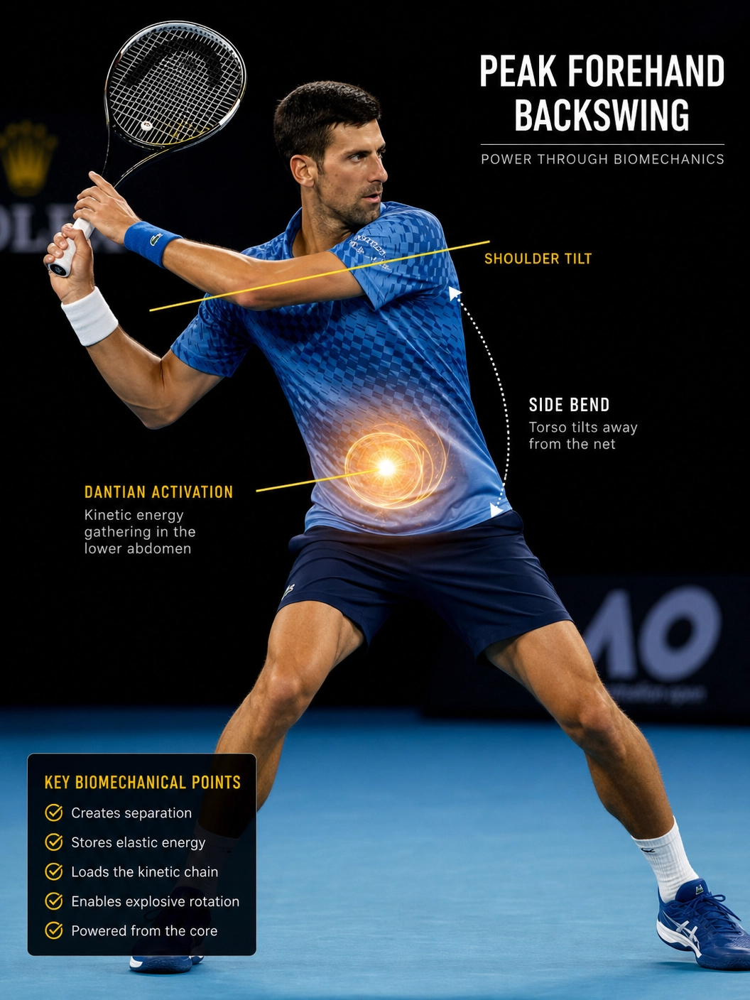
EN: Foot Configuration — The Foundation of Every Groundstroke
VI: Cấu hình chân — nền tảng của mọi cú đất
Quality: 4/5 (vision-QA, June 2026) · Path: forehand_2_loading.png
Hand-drawn stick figure of legs only, with 3 callouts and a FHGS/BHGS reference table — bent back, straight front, COG inside the base.
CUE (EN)
"1. Back leg bent deep 2. Front leg straight as a bridge 3. COG inside the base, not over 4. Hand and leg on one plane 5. Bent leg is the power leg"
CUE (VI)
"1. Chân sau gập sâu 2. Chân trước thẳng làm cầu 3. COG trong đế, không trên 4. Tay và chân cùng mặt phẳng 5. Chân gập là chân lực"
What the diagram is saying
- Single page, legs-only stick figure with three annotations: COG = IN the base; back leg = bent; front leg = straight.
- Reference table next to the figure: FHGS = front leg = Left, back leg = Right; BHGS = front leg = Right, back leg = Left.
- Hand-drawn pencil-sketch style with abbreviations defined inline.
Practical Instructions (Hướng Dẫn Thực Hành)
1. Bend the back leg deep, keep the front leg straight as a bridge.
1. Chân sau gập sâu, chân trước thẳng làm cầu.
2. Keep the center of gravity inside the base of the feet, not over the toes.
2. Giữ trọng tâm trong đế chân, không trên mũi chân.
3. Place the hand and the front leg on one plane — they should move together.
3. Đặt tay và chân trước cùng mặt phẳng — phải chuyển động cùng nhau.
4. The bent leg is the power leg; the straight leg is the brake leg.
4. Chân gập là chân lực, chân thẳng là chân phanh.
5. Stagger the feet: front foot flat, back foot on the ball with heel up.
5. So le: chân trước phẳng, chân sau trên mũi, gót nhón lên.
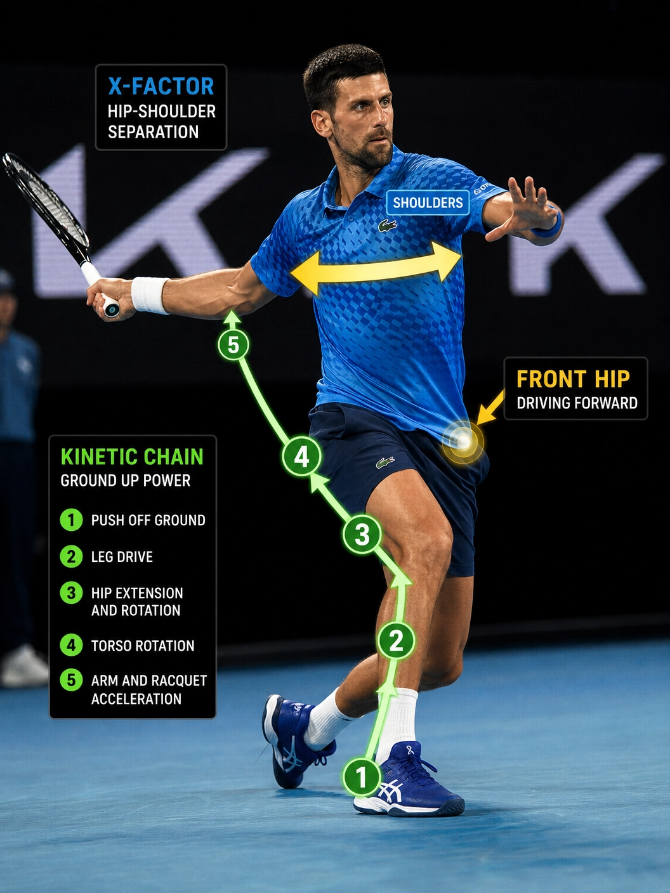
EN: How to Create a Big Shot With a Compact Stroke
VI: Tạo cú đánh mạnh bằng chuyển động ngắn gọn
Quality: 3/5 (vision-QA, June 2026) · Path: forehand_3_hip_bump.png
Compact stroke beats big backswing: hip-forward, brief takeback, hop counter. Side-profile stance with multiple ghost racket positions.
CUE (EN)
"1. Big shot = big chain, not big backswing 2. Hip forward, not arm back 3. Brief takeback, brief loop 4. Hop counter-balances the rotation 5. Compact wins at every level"
CUE (VI)
"1. Đánh mạnh = chuỗi lớn, không phải takeback xa 2. Hông tới, không tay lùi 3. Takeback ngắn, vòng ngắn 4. Hop đối-trọng-lực xoay 5. Gọn thắng ở mọi trình"
What the diagram is saying
- Side-profile athletic stance, bent knees leaning forward, racket extended out in front.
- Multiple 'ghost' racket positions show swing path — compact loop, not full backswing.
- Key annotations: 'Hip moves forward', 'Very brief take back to create momentum', 'Counter force with the hop'.
- Low ball variant: 'Close Racket Face & Top Points down'. High ball variant: 'Close Racket Face & Top Points Up'.
Practical Instructions (Hướng Dẫn Thực Hành)
1. Stand side-on, knees bent, lean forward, racket extended out in front.
1. Đứng nghiêng bên, gối gập, nghiêng về trước, vợt đưa ra phía trước.
2. Take a brief takeback — not a full backswing, just a small loop.
2. Takeback ngắn — không phải vung sau đầy đủ, chỉ một vòng nhỏ.
3. Push the hip forward; let the hip drive, not the arm.
3. Đẩy hông tới, để hông dẫn dắt, không phải tay.
4. Counter the rotation with a small hop on the back foot.
4. Hop đối-trọng-lực xoay.
5. Compact wins: brief loop + hip forward = more speed than big backswing.
5. Gọn thắng: vòng ngắn + hông tới = nhanh hơn vung xa.
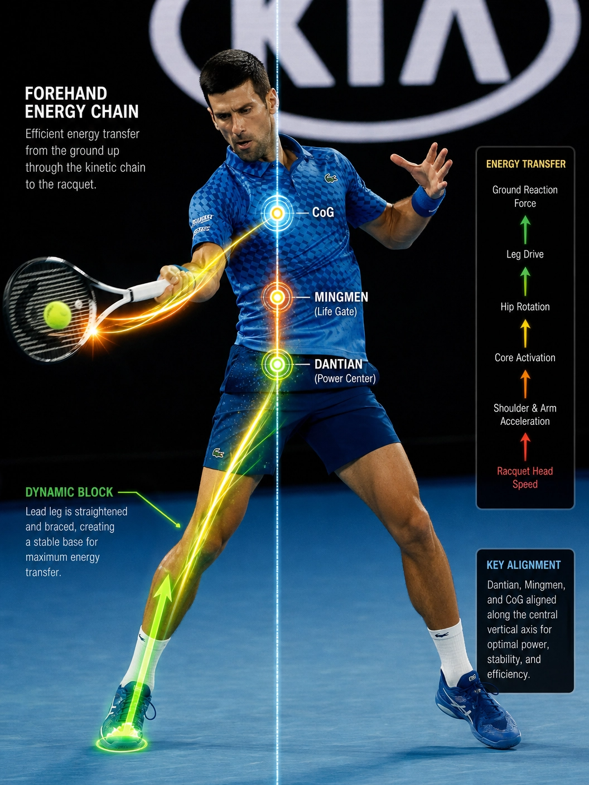
EN: Forehand radius collection & acceleration
VI: Forehand radius thu gom & tăng tốc
Quality: 4/5 (vision-QA, June 2026) · Path: forehand_4_contact.png
Forehand radius collection & acceleration
CUE (EN)
"1. Bend the knees to load 2. Coil the torso before swing 3. Hips lead, arm follows 4. Release the coil — do not force it 5. Racket head drops, lag creates speed"
CUE (VI)
"1. Gập gối để nạp 2. Xoắn thân trước vung 3. Hông dẫn, tay theo 4. Thả xoắn — đừng ép 5. Đầu vợt rơi, trễ tạo tốc"
What the diagram is saying
- Diagrammatic illustration: Forehand radius collection & acceleration
Practical Instructions (Hướng Dẫn Thực Hành)
1. Bend the knees to load the legs before the swing.
1. Gập gối để nạp chân trước cú vung.
2. Coil the torso — shoulders turn back, hips stay quiet.
2. Xoắn thân — vai xoay lùi, hông giữ yên.
3. Release the coil: hips lead, arm follows, racket head drops.
3. Thả xoắn: hông dẫn, tay theo, đầu vợt rơi xuống.
4. Do not force the swing — let the loaded body unwind.
4. Đừng ép cú vung — để cơ thể đã nạp tự bung.
5. The racket head lags behind the hand, creating whip-like speed at contact.
5. Đầu vợt trễ sau tay, tạo tốc độ roi da ở tiếp xúc.
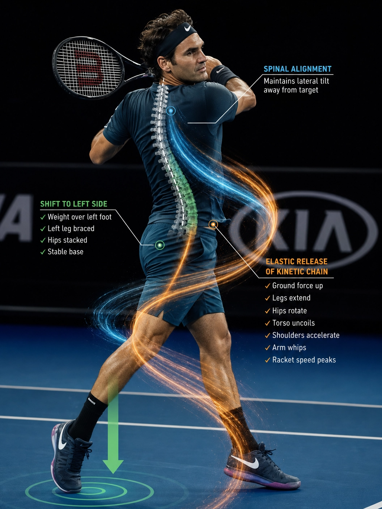
EN: Forehand wrist supination/pronation
Quality: 4/5 (vision-QA, June 2026) · Path: forehand_5_followthrough.png
Forehand wrist supination/pronation
CUE (EN)
"1. Hold loose — like holding a baby bird 2. Wrist lag = natural speed, not forced 3. Thumb up at contact, palm faces out 4. Pronation is shoulder-driven, not wrist 5. Forearm rotates around its own axis 6. Loose wrist, tight grip is the wrong order 7. Let the ball 'bite' the strings 8. Watch your palm — vertical = neutral 9. Don't snap — let lag release 10. Wrist supinates after contact, not before"
CUE (VI)
"1. Cầm lỏng — như cầm chim non 2. Cổ tay trễ = tốc độ tự nhiên, không ép 3. Ngón cái lên ở tiếp xúc, lòng bàn tay hướng ra 4. Xoay cẳng tay do vai, không phải cổ tay 5. Cẳng tay xoay quanh trục của chính nó 6. Cổ tay lỏng, cầm chặt là sai thứ tự 7. Để bóng 'cắn' dây vợt 8. Nhìn lòng bàn tay — dọc = trung tính 9. Đừng snap — để độ trễ tự bung 10. Cổ tay supinates sau tiếp xúc, không trước"
What the diagram is saying
- Diagrammatic illustration: Forehand wrist supination/pronation
Practical Instructions (Hướng Dẫn Thực Hành)
1. Hold the racket loose, like holding a baby bird — firm enough not to drop, gentle enough not to crush.
1. Cầm vợt lỏng, như cầm chim non — chắc để không rơi, nhẹ để không bẹp.
2. Keep the wrist laid back at contact, not actively bent.
2. Giữ cổ tay laid-back ở tiếp xúc, không gập chủ động.
3. Thumb points up at contact, palm faces out toward the target.
3. Ngón cái hướng lên ở tiếp xúc, lòng bàn tay hướng ra mục tiêu.
4. Pronation is shoulder-driven, not wrist-snap — let the body rotate, the wrist follows.
4. Pronation do vai dẫn, không phải cổ tay — để thân xoay, cổ tay theo.
5. After contact, let the racket continue rotating around the forearm's own axis — no manual flick.
5. Sau tiếp xúc, để vợt tiếp tục xoay quanh trục cẳng tay — không flick bằng tay.

EN: Ball contact path — flat vs topspin
Quality: 4/5 (vision-QA, June 2026) · Path: forehand_palm_up.png
Ball contact path — flat vs topspin
CUE (EN)
"1. Meet the ball out in front 2. Contact at lower part of string bed 3. Don't push through the ball 4. Let the strings bite, then release 5. Flat vs topspin = face angle difference 6. Topspin face angle: 5-10° from vertical 7. Flat face = cleanest power transfer 8. Brush up the back for topspin 9. Lower contact = more control 10. Feel the ball compress into strings"
CUE (VI)
"1. Gặp bóng phía trước người 2. Tiếp xúc ở phần dưới mặt vợt 3. Đừng đẩy xuyên bóng 4. Để dây cắn, rồi bung ra 5. Phẳng vs topspin = khác góc mặt vợt 6. Góc mặt vợt topspin: 5-10° từ dọc 7. Mặt phẳng = truyền lực sạch nhất 8. Quét lên phía sau cho topspin 9. Tiếp xúc thấp hơn = kiểm soát nhiều hơn 10. Cảm nhận bóng nén vào dây"
What the diagram is saying
- Diagrammatic illustration: Ball contact path — flat vs topspin
Practical Instructions (Hướng Dẫn Thực Hành)
1. Meet the ball out in front, not next to the body.
1. Gặp bóng phía trước người, không sát thân.
2. For flat: contact with the racket face vertical, just push through the ball.
2. Phẳng: tiếp xúc mặt vợt dọc, chỉ đẩy xuyên bóng.
3. For topspin: contact lower on the string bed, brush up the back of the ball.
3. Topspin: tiếp xúc thấp ở mặt vợt, quét lên phía sau bóng.
4. The face angle difference between flat and topspin is only 5-10 degrees.
4. Khác biệt góc mặt vợt giữa phẳng và topspin chỉ 5-10°.
5. Feel the ball compress into the strings, then release — let the strings bite.
5. Cảm nhận bóng nén vào dây, rồi thả ra — để dây cắn.
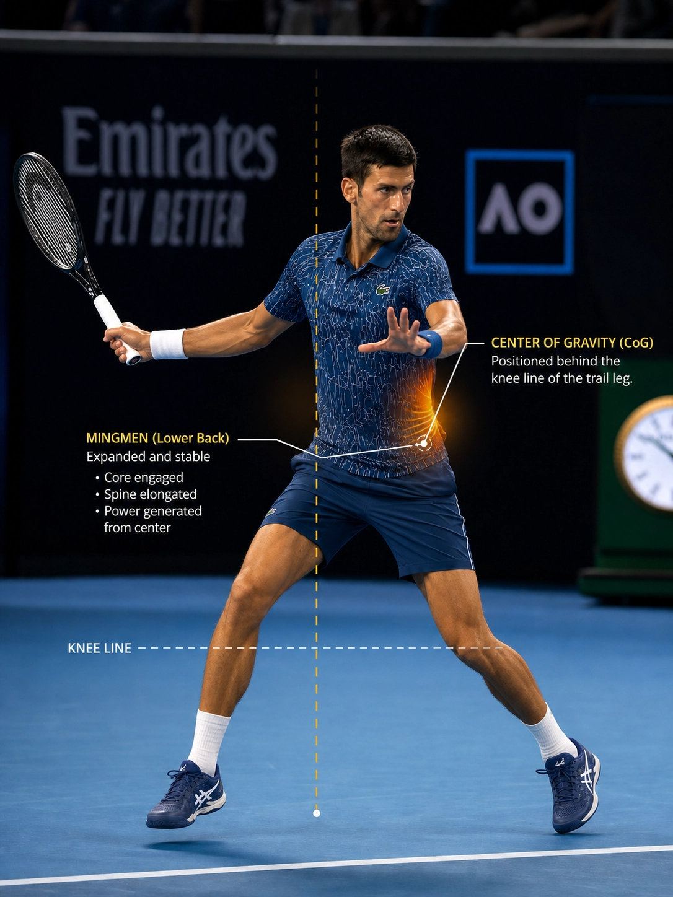
EN: Sling-shot Grip
Quality: 4/5 (vision-QA, June 2026) · Path: forehand_1_preparation_v2.png
Sling-shot Grip / "ball out in front"
CUE (EN)
"1. Hold between thumb and middle finger only 2. Drop the racket — feel it fall 3. Loose grip = natural lag 4. Two fingers hold, three fingers release 5. Sling = elbow up, racket head down 6. Beyond the joint = beyond the body's reach 7. The racket falls BEFORE you swing 8. Sling creates whip, swing creates noise 9. Don't squeeze — trust the sling 10. The whip is gravity + rotation"
CUE (VI)
"1. Chỉ cầm giữa ngón cái và ngón giữa 2. Thả vợt — cảm nhận nó rơi 3. Cầm lỏng = độ trễ tự nhiên 4. Hai ngón giữ, ba ngón thả 5. Sling = khuỷu lên, đầu vợt xuống 6. Vượt khớp = vượt tầm cơ thể 7. Vợt rơi TRƯỚC khi bạn vung 8. Sling tạo roi, vung tạo ồn 9. Đừng bóp — tin vào sling 10. Cái roi là trọng lực + xoay"
What the diagram is saying
- Diagrammatic illustration: Sling-shot Grip / "ball out in front"
Practical Instructions (Hướng Dẫn Thực Hành)
1. Hold the racket between thumb and middle finger only — let the other fingers relax.
1. Chỉ cầm giữa ngón cái và ngón giữa — các ngón khác thả lỏng.
2. Drop the racket: feel the head fall freely, gravity creates the lag.
2. Thả vợt: cảm nhận đầu vợt rơi tự do, trọng lực tạo độ trễ.
3. Two fingers hold, three fingers release — keep the grip pressure under 4/10 until contact.
3. Hai ngón giữ, ba ngón thả — giữ grip dưới 4/10 cho tới tiếp xúc.
4. Raise the elbow up, let the racket head drop below the hand — the L-shape.
4. Nâng khuỷu lên, để đầu vợt rơi thấp hơn tay — hình chữ L.
5. At contact, the whip releases: gravity + rotation = speed, not muscle.
5. Ở tiếp xúc, roi bung: trọng lực + xoay = tốc độ, không phải cơ bắp.
3 takeaway cuối
- (1) Phân bổ lực là chuỗi, không phải cánh tay. Internal rotation đóng 40%; arm swing chỉ là passenger.
- (2) Bent-back + straight-front stance là foundation. COG in the base. Mọi groundstroke bắt đầu từ đây.
- (3) Compact wins over big. Brief loop + hip forward + hop counter là đủ để tạo racket head speed.
Drills tham khảo (20-min practice)
- 5 phút Shadow với khăn (zero ball) — chỉ tập chuỗi chân → hông → tay, không bóng.
- 5 phút Hit from basket từ middle baseline, target: 7/10 quả vào 1m zone bên trong baseline.
- 5 phút Cross-court rally — chỉ tập redirect, không cố kill.
- 5 phút Service-box volley poach (compact finish) — lặp lại cú compact stroke ở forehand.
End of FOREHAND
Henry Pham · Visual Coaching Library · Pilot Series · June 2026
TOPIC 2 of 11
SERVE Long Axis Rotation (L.A.R.) — Serve as Whole-Body Twist
— verso —
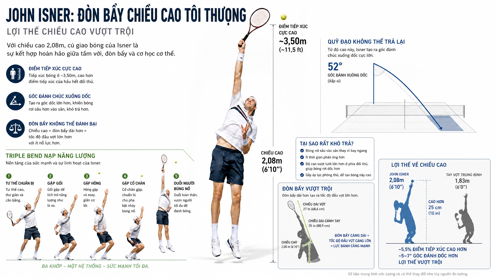
EN: Four Core Phases of the Tennis Serve — The Long Axis Rotation
VI: Bốn giai đoạn cốt lõi của giao bóng tennis — Long Axis Rotation
Quality: 3/5 (vision-QA, June 2026) · Path: serve_isner_vi.png
Annotated serve with L.A.R. ellipse overlay, 4-phase callouts, COG/Load/Twisted/Contact markers, bilingual VI + EN. Signed 'Henry Pham'.
CUE (EN)
"The serve is not an arm swing. It is long-axis rotation: legs → hips → shoulders → arm. The arm is the last link, not the engine."
CUE (VI)
"Serve không phải vung tay. Nó là xoắn toàn thân: chân → hông → vai → tay. Tay là khâu cuối, không phải động cơ."
What the diagram is saying
- Central illustration: tennis player at end of trophy phase, staggered stance, knee bent, tossing arm vertical holding the ball, racket arm coiled behind head.
- Concentric motion lines around torso showing energy rotation — the Long Axis Rotation (L.A.R.) zone.
- Four colour-coded callouts (EN + VI): Ready (green), Load (green), Twisted/Kink (red — WARNING), Contact (orange).
- Red ellipse overlay highlights the L.A.R. zone — curved arrows show long-axis twist from legs → hips → shoulders → arm.
Practical Instructions (Hướng Dẫn Thực Hành)
1. L.A.R. = Long Axis Rotation — the body's vertical axis rotates, not the arm.
1. L.A.R. = Long Axis Rotation — trục dọc cơ thể xoay, không phải tay.
2. Phase 1: Stance + Toss — feet at 45°, toss slightly in front, weight on back foot.
2. Pha 1: Tư thế + Toss — chân 45°, toss hơi phía trước, trọng lượng chân sau.
3. Phase 2: Trophy Pose — racket up, elbow bent, body coiled like a spring.
3. Pha 2: Trophy Pose — vợt lên, khuỷu gập, thân xoắn như lò xo.
4. Phase 3: Pronation — racket face opens through the ball, not a wrist snap.
4. Pha 3: Pronation — mặt vợt mở qua bóng, không phải snap cổ tay.
5. Phase 4: Follow-Through — racket lands on the left side, body fully extended.
5. Pha 4: Follow-Through — vợt rơi bên trái, thân duỗi hoàn toàn.

EN: Elbow 3D movement path (serve)
Quality: 4/5 (vision-QA, June 2026) · Path: serve_shelton_vi.png
Elbow 3D movement path (serve)
CUE (EN)
"1. Elbow leads, racket follows 2. Trophy pose = elbow at 90° 3. Path: high → back → up 4. Elbow trajectory = L-shape 5. Don't drop the elbow below the wrist 6. Internal rotation starts from the elbow 7. Elbow drives the racket head 8. 3D path: not just up-down, but back-up 9. Keep elbow above shoulder at contact 10. Pronation = forearm rotation around elbow"
CUE (VI)
"1. Khuỷu dẫn, vợt theo 2. Tư thế trophy = khuỷu ở 90° 3. Đường: cao → sau → lên 4. Quỹ đạo khuỷu = hình chữ L 5. Đừng để khuỷu thấp hơn cổ tay 6. Xoay trong bắt đầu từ khuỷu 7. Khuỷu điều khiển đầu vợt 8. Đường 3D: không chỉ lên-xuống, mà sau-lên 9. Giữ khuỷu trên vai ở tiếp xúc 10. Pronation = cẳng tay xoay quanh khuỷu"
What the diagram is saying
- Diagrammatic illustration: Elbow 3D movement path (serve)
Practical Instructions (Hướng Dẫn Thực Hành)
1. Elbow leads, racket follows — the elbow is the steering wheel of the serve.
1. Khuỷu dẫn, vợt theo — khuỷu là vô-lăng của cú giao bóng.
2. 3D path: up, then forward, then down — the L-shape is the 3D signature of the serve.
2. Quỹ đạo 3D: lên, rồi tới, rồi xuống — hình chữ L là dấu ấn 3D.
3. Pronation is internal rotation, not wrist snap — let the body rotate, the wrist follows.
3. Pronation là xoay trong, không phải snap cổ tay — để thân xoay, cổ tay theo.
4. Elbow should track up-and-out, not up-and-back — many players lose power by going too far back.
4. Khuỷu đi lên-và-ra, không lên-và-sau — nhiều người mất lực vì lùi quá đà.
5. At contact, the elbow is fully extended, the racket face is vertical, the body is committed.
5. Ở tiếp xúc, khuỷu duỗi thẳng, mặt vợt dọc, thân đã commit.
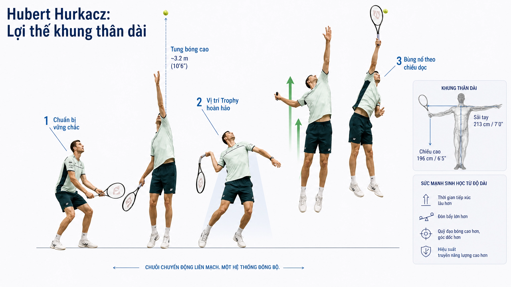
EN: Serve - Controlled falling (kinetic chain)
Quality: 4/5 (vision-QA, June 2026) · Path: serve_hurkacz_vi.png
Serve - Controlled falling (kinetic chain)
CUE (EN)
"1. Let the racket pull the chest down 2. Don't pull the racket - let it fall 3. Scapular load controls the fall 4. Heavy weight pulls the arm naturally 5. Fall = storage, not weakness 6. Loose arm = greater fall = more power 7. Drop into the slot, don't reach for it 8. The fall is where the energy lives 9. Catch the racket, don't throw it 10. Fall ends at trophy pose, not earlier"
CUE (VI)
"1. Để vợt kéo ngực xuống 2. Đừng kéo vợt - để nó rơi 3. Nạp bả vai kiểm soát sự rơi 4. Trọng lượng nặng kéo tay tự nhiên 5. Rơi = tích trữ, không phải yếu 6. Tay lỏng = rơi nhiều hơn = lực mạnh hơn 7. Rơi vào rãnh, đừng với lấy nó 8. Sự rơi là nơi năng lượng sống 9. Bắt vợt, đừng ném nó 10. Rơi kết thúc ở trophy, không sớm hơn"
What the diagram is saying
- Diagrammatic illustration: Serve - Controlled falling (kinetic chain)
Practical Instructions (Hướng Dẫn Thực Hành)
1. Drop into the slot — do not reach for the ball, let the racket pull the chest down.
1. Rơi vào slot — đừng với lấy bóng, để vợt kéo ngực xuống.
2. Catch the racket at the bottom of the fall — the weight pulls the arm into pronation.
2. Bắt vợt ở đáy cú rơi — sức nặng kéo tay vào pronation.
3. The fall is where energy lives — heavy weight, gravity, free acceleration.
3. Cú rơi là nơi năng lượng sống — nặng, trọng lực, tăng tốc tự do.
4. Chest compression at the bottom of the slot — torso is fully engaged.
4. Nén ngực ở đáy slot — thân đã gài hoàn toàn.
5. Then extend up: legs drive, hip opens, shoulder whips, racket head accelerates into ball.
5. Rồi duỗi lên: chân đẩy, hông mở, vai quất, đầu vợt tăng tốc vào bóng.
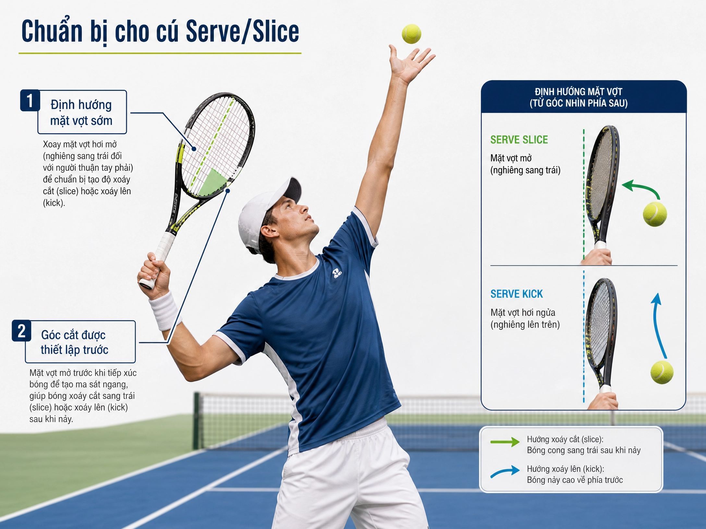
EN: Optional Arm Configuration (Ulnar Deviation - serve & forehand)
Quality: 4/5 (vision-QA, June 2026) · Path: serve_racquet_orientation.png
Optional Arm Configuration (Ulnar Deviation - serve & forehand)
CUE (EN)
"1. Wrist bends outward at contact 2. Ulnar deviation = wrist flexes pinky-side 3. Optional, not always — feel first 4. Adds snap to the forehand 5. Like hammering a nail with wrist 6. Don't force it — use as accent 7. Wrist deviation = 5-10° at impact 8. Load forearm, release at contact 9. Combine with pronation for max snap 10. Optional = experiment, not mandatory"
CUE (VI)
"1. Cổ tay gập ra ngoài ở tiếp xúc 2. Lệch trụ = cổ tay gập về phía ngón út 3. Tuỳ chọn, không phải lúc nào cũng dùng — cảm nhận trước 4. Thêm snap cho forehand 5. Như đóng đinh bằng cổ tay 6. Đừng ép — dùng như điểm nhấn 7. Lệch cổ tay = 5-10° ở tiếp xúc 8. Nạp cẳng tay, thả ở tiếp xúc 9. Kết hợp với pronation để snap tối đa 10. Tuỳ chọn = thử nghiệm, không bắt buộc"
What the diagram is saying
- Diagrammatic illustration: Optional Arm Configuration (Ulnar Deviation - serve & forehand)
Practical Instructions (Hướng Dẫn Thực Hành)
1. Ulnar deviation is the wrist flick at contact — like hammering a nail with the wrist.
1. Ulnar deviation là flick cổ tay ở tiếp xúc — như đóng đinh bằng cổ tay.
2. Use as accent, not default — 80% leg, 20% arm (Bollettieri's rule).
2. Dùng như accent, không phải mặc định — 80% chân, 20% tay (Bollettieri).
3. Do not force the flick — the body rotation should bring the wrist through naturally.
3. Đừng ép flick — xoay thân phải đưa cổ tay qua tự nhiên.
4. Ulnar deviation adds power but also adds risk of injury — practice it gradually.
4. Ulnar deviation thêm lực nhưng cũng thêm rủi ro chấn thương — tập dần dần.
5. For consistent serves, rely on the kinetic chain, not the wrist flick.
5. Để giao bóng ổn định, dựa vào chuỗi động học, không phải flick cổ tay.
3 takeaway cuối
- (1) Pronation đến từ vai, không từ cổ tay. Modern HLV gọi đây là pronation; bản chất là internal shoulder rotation với cánh tay lỏng.
- (2) Tay chỉ là hành khách. Hông tạo lực (kinetic chain). Vợt kéo vai-ngực ra sau, không phải 'tôi kéo vợt'.
- (3) 50+ người chơi thường gồng vai khi serve → đau vai, mất lực. Thả lỏng tay trước, xoay sau, lag rồi bung.
Drills tham khảo (20-min practice)
- 5 phút Shadow với khăn: cầm khăn ở tay vợt, đưa lên, thả lỏng để khăn rơi sau lưng, cảm giác nặng kéo vai xuống. 20 lần.
- Drill 'đếm 1-2': 1 = trophy (ngực kéo ra sau), 2 = hông đẩy lên, tay chỉ rơi theo. Mục tiêu: nghe tiếng 'vút' ở cuối, không phải ở đầu.
- Serve 50%: chỉ giao bóng 50% lực, tập trung cảm giác 'vợt kéo mình'. Tăng lực khi bóng đi sâu mà vai không mỏi.
End of SERVE
Henry Pham · Visual Coaching Library · Pilot Series · June 2026
TOPIC 3 of 11
VOLLEY Less is More — Catch, Don't Swing
— verso —
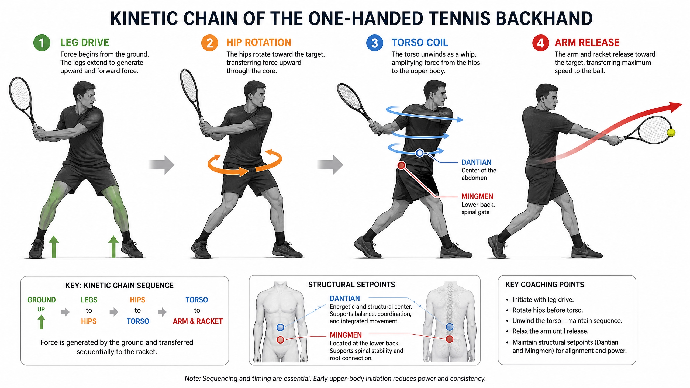
EN: Master the Volley — The 'Less is More' Blueprint
VI: Làm chủ Volley — Bản thiết kế 'Ít là Nhiều'
Quality: 4/5 (vision-QA, June 2026) · Path: Volley Less Is More Blueprint.png
NotebookLM infographic with 4 sections: Mechanical Setup, Hitting Logic (catch, don't swing), Elite Comparison, Foot Stance.
CUE (EN)
"Volley is not a swing — it is a catch and redirect. Racket face perpendicular, body forward, catch then push. No backswing, no chop."
CUE (VI)
"Volley không phải cú vung — nó là đỡ rồi đẩy. Mặt vợt vuông góc, người tiến, đỡ xong đẩy. Không vung, không chặt."
What the diagram is saying
- Title: 'Master the Volley: The "Less is More" Blueprint'. Subtitle: 'Essential Mechanical & Mental Shifts for Professional Control & Simplicity'.
- Central figure: player at net mid-volley, racket forward meeting ball, 'impact sparks' visual effect.
- Section 1 — Mechanical Setup: Continental grip + Open-U arm (45° forearm-racket angle).
- Section 2 — Hitting Logic: 'Catch the ball, don't swing' with baseball glove icon. High-to-low path for control backspin.
- Section 3 — Elite Comparison: Flat/Reflex vs Slice/Israeli with WHY/HOW sub-grids.
- Section 4 — Foot Stance: Sprinter ready stance + 'After-Step' timing (impact first, then step).
- Centre quote: 'Elite volleying is defined by simplicity & stability, redirecting opponent's power with precision.'
Practical Instructions (Hướng Dẫn Thực Hành)
1. Stand at the net in sprinter-ready stance: feet staggered, weight on the balls, knees soft, racket forward in front of the chest.
1. Đứng lưới ở tư thế sprinter-ready: chân so le, trọng lượng trên mũi, gối mềm, vợt phía trước ngực.
2. Use Continental grip — index knuckle on bevel 2. Open-U arm: 45° between forearm and racket, no big backswing.
2. Dùng grip Continental — đốt ngón trỏ trên bevel 2. Cánh tay Open-U: 45° giữa cẳng tay và vợt, không vung sau.
3. Catch the ball with the racket face, don't swing at it — the ball comes to you, you just redirect.
3. Bắt bóng bằng mặt vợt, đừng vung — bóng tới, mình chỉ chuyển hướng.
4. Impact first, then step — meet the ball out in front, then push forward to compress the opponent or close the angle.
4. Tiếp xúc trước, bước sau — gặp bóng phía trước, rồi đẩy tới để nén đối thủ.
5. Keep the body still after contact, do not chop down — wrist moves forward, not down, to avoid pop-up balls.
5. Giữ thân yên sau tiếp xúc, đừng chặt xuống — cổ tay đi tới, không đi xuống, để tránh pop-up.

EN: Tennis Footwork: Volley Drills (Jamie Murray)
VI: Bài tập chân Volley (Jamie Murray)
Quality: 4/5 (vision-QA, June 2026) · Path: volley_early_set.png
Two drill patterns: Far Ball (step-step-step, 3-step progression) vs Close Ball (cross-over, BHV/FHV variants).
CUE (EN)
"Far balls → step-step-step (3 bước rõ ràng). Close balls → cross-over (1 chân qua chân kia). Always impact FIRST, then step."
CUE (VI)
"Bóng xa → step-step-step (3 bước rõ). Bóng gần → cross-over (1 chân qua chân kia). Luôn tiếp xúc TRƯỚC, bước SAU."
What the diagram is saying
- Drill 1 — Far Ball / Move by Steps: 3-step progression (Start → Approach → Finish). Stick figure with callout: Outside leg → Inside leg → Outside leg.
- Drill 2 — Cross-over Steps for Close Ball: BHV (Backhand Volley) cross-over — left foot cross-over then RF pull-around-inside. FHV (Forehand Volley) cross-over — right foot cross-over then LF cross-over.
- Both drills end with a 'Return arrow': push off, recover to ready position.
Practical Instructions (Hướng Dẫn Thực Hành)
1. For far balls: step-step-step — outside leg first, then inside leg, then outside leg again, in 3 distinct steps.
1. Bóng xa: step-step-step — chân ngoài trước, chân trong, chân ngoài, 3 bước rõ ràng.
2. For close balls: cross-over step — one foot crosses over the other, then pulls around, for fast recovery.
2. Bóng gần: cross-over — chân này bước qua chân kia, kéo quanh, phục hồi nhanh.
3. Always impact the ball first, then step — the step is for recovery, not preparation.
3. Luôn tiếp xúc bóng trước, rồi bước — bước để phục hồi, không phải chuẩn bị.
4. End every drill with a return arrow: push off, recover to the middle, ready position.
4. Mỗi bài tập kết thúc bằng mũi tên return: đẩy ra, về giữa, sẵn sàng.
5. Practice both patterns with a partner feeding balls from the baseline, calling 'FHV' or 'BHV' before each shot.
5. Tập cả hai mẫu với bạn feed từ baseline, gọi 'FHV' hoặc 'BHV' trước mỗi cú.
EN: Tension & Integrity — Mechanics of a Tennis Volley
VI: Căng & Nguyên vẹn — Cơ học của cú Volley
Quality: 3/5 (vision-QA, June 2026) · Path: volley_early_set.png
Torsion + elastic energy storage. The unified-arm concept: 1 piece = 1 unit = 1 whip. Pre-load, then swing.
CUE (EN)
"Tension and integrity: store elastic energy by being pre-loaded. Then release. The arm is one whip, not two hands."
CUE (VI)
"Căng và nguyên vẹn: tích trữ năng lượng đàn hồi bằng cách nạp trước. Rồi thả. Tay là một roi, không phải hai tay rời rạc."
What the diagram is saying
- Title: 'TENSION & INTEGRITY: MECHANICS OF A TENNIS VOLLEY'.
- Top-right note: 'Apply to all strokes (esp. volley) = 1 piece'.
- Central illustration: vertical grey rod/axis with multi-coloured coiled spring wrapping around — coils show torsional deformation. Text 'STORE ELASTIC ENERGY' below.
- Pathway of Energy caption: 'From left hand to right hand → 1 piece = 1 Unit = 1 Whip'.
- Two example boxes: EXAMPLE A (Pre-loaded) 'Feel stretched when pre-loaded'; EXAMPLE B (Swinging) 'Feel relax when swing'.
Practical Instructions (Hướng Dẫn Thực Hành)
1. Pre-load the body: feel stretched when coiled — tension is stored, not avoided.
1. Pre-load cơ thể: cảm thấy kéo căng khi xoắn — lực được tích trữ, không tránh né.
2. Lower body is stable — 2 legs have tension, front leg as a bridge, back leg drives forward.
2. Thân dưới ổn định — 2 chân có lực, chân trước làm cầu, chân sau đẩy tới.
3. From left hand to right hand, treat the arm as 1 piece = 1 unit = 1 whip.
3. Từ tay trái sang tay phải, coi cánh tay là 1 mảnh = 1 đơn vị = 1 roi da.
4. At contact: feel relax when swinging — release the stored energy through the unified arm.
4. Ở tiếp xúc: cảm thấy thư giãn khi vung — giải phóng năng lượng qua cánh tay hợp nhất.
5. After contact: store elastic energy by being pre-loaded again — ready for the next ball.
5. Sau tiếp xúc: tích trữ đàn hồi bằng pre-load lại — sẵn sàng cho bóng tiếp theo.
EN: Palm Up
Quality: 4/5 (vision-QA, June 2026) · Path: volley_early_set.png
Palm Up / Palm Down racket face control + kinematic chain + volley
CUE (EN)
"1. Forehand: palm up at contact 2. Backhand: palm down at contact 3. Palm direction = ball direction 4. Paddle analogy — paddle has a face 5. Racket face = palm face 6. Vertical palm = neutral position 7. Tilt palm = tilt ball trajectory 8. Palm up = open face = topspin 9. Palm down = closed face = slice 10. The palm knows where the ball goes"
CUE (VI)
"1. Forehand: lòng bàn tay lên ở tiếp xúc 2. Backhand: lòng bàn tay xuống ở tiếp xúc 3. Hướng lòng bàn tay = hướng bóng 4. Phép so sánh mái chèo — mái chèo có mặt 5. Mặt vợt = mặt lòng bàn tay 6. Lòng bàn tay dọc = vị trí trung tính 7. Nghiêng lòng bàn tay = nghiêng quỹ đạo bóng 8. Lòng bàn tay lên = mặt mở = topspin 9. Lòng bàn tay xuống = mặt đóng = slice 10. Lòng bàn tay biết bóng đi đâu"
What the diagram is saying
- Diagrammatic illustration: Palm Up / Palm Down racket face control + kinematic chain + volley
Practical Instructions (Hướng Dẫn Thực Hành)
1. Forehand volley: palm up at contact — the palm knows where the ball goes.
1. Forehand volley: lòng bàn tay lên ở tiếp xúc — lòng bàn tay biết bóng đi đâu.
2. Racket face = palm face: open face = lift the ball, closed face = drive the ball down.
2. Mặt vợt = mặt lòng bàn tay: mở = nâng bóng, đóng = đập bóng xuống.
3. Vertical palm = neutral position — default starting point for any volley.
3. Lòng bàn tay dọc = vị trí trung tính — điểm bắt đầu mặc định cho mọi volley.
4. Paddle analogy: imagine a paddle, tilt the palm to tilt the ball trajectory.
4. Phép so sánh mái chèo: tưởng tượng mái chèo, nghiêng lòng bàn tay để nghiêng quỹ đạo bóng.
5. Backhand volley: palm down at contact — same logic, opposite face angle.
5. Backhand volley: lòng bàn tay xuống ở tiếp xúc — cùng logic, góc mặt vợt ngược lại.
3 takeaway cuối
- (1) Volley = catch, không phải swing. Mặt vợt vuông góc, người tiến, đỡ xong đẩy — không vung, không chặt.
- (2) Impact trước, step sau. Bóng xa → step-step-step (3 bước); bóng gần → cross-over. Luôn impact trước, bước sau.
- (3) Căng trong, lỏng ngoài. Tay là một roi (1 piece = 1 whip). Pre-load = stretch; swing = relax. Torsion tích năng lượng, swing giải phóng.
Drills tham khảo (20-min practice)
- 5 phút Wall volley no-backswing: đứng cách tường 3m, volley nhẹ; target 20 FH + 20 BH liên tục, chỉ mặt vợt vuông góc.
- 5 phút Bridge-leg drill: chân trước (trái cho FH volley) đặt trên vạch, chân sau đẩy nhẹ tới, vợt chỉ 'đấm' 15cm về trước.
- 5 phút Partner poach game: partner ném nhẹ vào ngực khi bạn gót chân → lặp lại khi mũi chân đổ trước → sẽ thấy né dễ hơn.
- 5 phút Cross-step close-volley: tự ném bóng tới sát người, xuyệt qua bên kia lưới → thực hành cross-over steps.
Special note
Sửa 1 lỗi volley #1 của 50+: không ngả sau. HLV gọi đây là 'lỗi volley #1' vì hông khóa, không chuyển được lực từ chân sau; mặt vợt mở lên trời → bóng bay ra ngoài; đặt lên gót chân, khó né bóng. Sửa bằng cách giữ bước ngắn, gối gập, thân trên chỉ hơi đổ trước từ hông — không phải gập lưng.
End of VOLLEY
Henry Pham · Visual Coaching Library · Pilot Series · June 2026
TOPIC 4 of 11
OK GRIP OK Grip + Embodied Forehand — Rơi Tự Nhiên, Chuỗi Động Học Từ Đất Lên
— verso —
EN: OK Grip & Kinetic Chain: Passive Wrist Lag for Effortless Forehand
VI: OK Grip & Chuỗi Động Học — Rơi Tự Nhiên Để Forehand Nhẹ Nhàng
Quality: 4/5 (gemini-vi sample, 2026-06-29) (vision-QA, June 2026) · Path: forehand_palm_up.png
3-phase diagram: SET/NẠP (preparation) → RELEASE/RƠI (drop) → THROW/NÉM (contact/follow-through). Orange = kinetic energy flow, teal = body. Hand grip insets show OK-sign (thumb + middle finger only).
CUE (EN)
"Hold the racket like a small bird. Cầm vợt lỏng lẻo như cầm chim non. Let the racket fall — do not pull it. Để hông dẫn dắt, không phải tay. Wrist lag is the result of relaxation, not effort."
CUE (VI)
"Cầm vợt chỉ bằng ngón cái và ngón giữa (dấu OK). Vợt rơi tự nhiên do quán tính, không kéo chủ động. Hông xoay trước, vai và tay đi theo sau. Cổ tay thả lỏng, đầu vợt trễ lại phía sau bàn tay — đó là 'wrist lag' tự nhiên, hiệu ứng roi quất."
What the diagram is saying
- Phase 1 SET (NẠP): Unit turn + racket back. Racket head up ('Đầu vợt chỉ trời'). Hand grip = OK sign (thumb + middle finger only, no index/ring/pinky). Brain icon = 'feel' not 'think'.
- Phase 2 RELEASE (RƠI): Hip leads, racket drops behind body via inertia. Comparison boxes: LAG THỤ ĐỘNG (passive lag, ✓) vs SNAP CHỦ ĐỘNG (active pull, ✗). Hand label: 'trượt nhẹ trong tay' (slide gently).
- Phase 3 THROW (NÉM): Full hip/torso rotation. Racket meets ball with max head speed. 3 benefit icons: lag feel, timing, elbow protection. Finger pressure 3/10 (fine-tune, not death-grip).
- Kinetic chain arrows flow foot → hip → torso → arm in all 3 phases. Force graph on left = pressure/load over time. Forearm inset shows wrist in lag position (slight extension, not locked).
Practical Instructions (Hướng Dẫn Thực Hành)
1. OK grip: between thumb and middle finger only, three fingers relaxed on the handle.
1. OK Grip: giữa ngón cái và ngón giữa, ba ngón còn lại thả lỏng trên cán vợt.
2. Cầm lỏng — như cầm chim non (hold loose, like holding a baby bird).
2. Cầm lỏng — như cầm chim non.
3. Drop the racket head freely — gravity creates the lag, do not force it.
3. Thả đầu vợt tự do — trọng lực tạo độ trễ, đừng ép.
4. Để hông dẫn dắt (let the hips lead) — hip rotation, then shoulder, then arm, then racket.
4. Để hông dẫn dắt — hông xoay, rồi vai, rồi tay, rồi vợt.
5. At contact, the whip releases: 2 fingers hold, 3 fingers release, racket head whips through.
5. Ở tiếp xúc, roi bung: 2 ngón giữ, 3 ngón thả, đầu vợt quất qua.

EN: Forehand & Backhand Embodied Training: From Neural Control to Match
VI: Forehand & Backhand Qua Lăng Kính Embodied — Từ Thần Kinh Đến Trận Đấu
Quality: 4/5 (gemini-vi sample, 2026-06-29) (vision-QA, June 2026) · Path: forehand_alcaraz_vi.png
3-section framework: (1) Foundation: balance + body schema (head/neck stability, OK grip constraint, bare foot, racket embodiment). (2) Kinetic chain + stance (GRF/ISR diagram, open stance FH, closed stance BH). (3) Perception/reaction/flow (novice brain vs advanced brain, pre/in/post-point model).
CUE (EN)
"Don't think about the swing. Think about the ball, the target, the opponent's body. Forehand is not a movement to perform — it is a response to a perceived situation. The technique emerges from perception."
CUE (VI)
"Mô hình truyền thống: Kỹ thuật → Lặp lại → Trận đấu. Mô hình Embodied: Nhận thức → Hành động → Thích nghi → Kỹ năng. Người mới dùng tay đánh bóng, mất kết nối với chân, mất cân bằng sau cú đánh. Người giỏi cảm nhận lực từ mặt sân, truyền lực qua toàn thân, giữ ổn định đầu và mắt. Kỹ thuật xuất hiện như kết quả của sự thích nghi, không phải mục tiêu ban đầu."
What the diagram is saying
- Section 1 (Foundation): Head + neck stability as gyroscope (Taichi principle), barefoot GRF perception, racket as 'extended body schema' (tool embodiment).
- Section 2 (Kinetic Chain): Central anatomical figure with colored arrows — green=GRF, red=torso, yellow=arm, green=pronation, purple=ISR (Internal Shoulder Rotation). Open stance forehand pushes from back leg (SSC), closed stance backhand uses deep leg coil + massive rotation.
- Section 3 (Perception/Flow): Novice brain thinks about process (internal focus, 'think → move'). Advanced brain focuses on target (external focus, 'see → move', flow). 3-phase match model: pre-point (breath, barefoot feel) → in-point (rapid predict-act) → post-point (affordance summary + error correction).
- Cross-citation: [1.1] = balance/head position, [2.1] = racket embodiment, [3.1] = match flow. Source paper referenced but not full-cited (likely the user's own 'Tennis_Forehand_Biomechanics_A_Visual_Analysis.docx').
Practical Instructions (Hướng Dẫn Thực Hành)
1. Perception → Action → Adaptation → Skill (not Technique → Repetition → Match).
1. Nhận thức → Hành động → Thích nghi → Kỹ năng (không phải Kỹ thuật → Lặp lại → Trận đấu).
2. Feel breath, barefoot, sensory feel — re-establish the body-court connection.
2. Cảm nhận hơi thở, chân trần, cảm giác giác quan — tái lập kết nối thân-sân.
3. Rapid Predict → Act at the contact moment — read the ball, then commit.
3. Dự đoán nhanh → Hành động lúc tiếp xúc — đọc bóng, rồi commit.
4. After contact: summarize the affordance, feed it back to the neural model.
4. Sau tiếp xúc: tóm tắt affordance, cho ăn lại mô hình thần kinh.
5. The technique emerges from perception, not the other way around — embody the stroke.
5. Kỹ thuật xuất hiện từ nhận thức, không ngược lại — nhập thể cú đánh.
3 takeaway cuối
- OK Grip không phải cách cầm vợt vĩnh viễn — đó là một bài tập để dạy cổ tay rơi tự nhiên. Mục tiêu: cảm nhận wrist lag qua quán tính, không qua nỗ lực cổ tay. Cầm vợt như cầm chim non. (Cú_Thuận_Tay__OK_Grip)
- Chuỗi động học chạy từ chân lên, không phải từ tay xuống. Lực phản ứng mặt đất (GRF) → hông xoay → thân mở → vợt rơi → tiếp xúc. Lỗi phổ biến nhất: cố gắng tạo sức mạnh bằng cánh tay, làm đứt gãy chuỗi. (Section 1.1)
- Forehand theo mô hình Embodied: nhận thức → hành động → thích nghi → kỹ năng. Kỹ thuật là kết quả, không phải mục tiêu. Người chơi tập trung vào mục tiêu (external focus), không vào quy trình (internal focus). (Complete Embodied Tennis Training Methodology.md)
Drills tham khảo (20-min practice)
- 5 phút OK Grip drill: cầm vợt chỉ bằng ngón cái + ngón giữa, vung vợt nhẹ tại chỗ 50 lần, cảm nhận vợt rơi tự do.
- 5 phút Vợt rơi (Drop drill): vung vợt ra sau, để vợt rơi tự nhiên phía sau lưng, cảm nhận quán tính. 30 lần / bên.
- 5 phút Đánh bóng ném: ném bóng bằng tay không thuận (forehand motion), rồi đánh thật với OK Grip — hông dẫn, tay theo.
- 5 phút Đánh chậm vào vùng 1m²: cảm nhận truyền lực từ chân lên vợt. Mỗi quả tự hỏi 'hông đã xoay trước chưa?'
- 5 phút Barefoot GRF: đi chân trần trên sân, cảm nhận áp lực lòng bàn chân (gót, ngón cái, mép ngoài). Sau đó đánh.
- 5 phút External focus forehand: đánh 20 forehand vào target nhỏ (vỏ chai), chỉ nhìn target — không nghĩ về form.
Special note
Hai hình này đến từ Gemini Vi/ (sinh sau 29/06/2026), chưa được lọc kỹ như 3 thẻ đầu. Vision-QA xác nhận chất lượng 4/5 cả hai — đủ dùng. Nếu thấy bất kỳ typo/garble nào khó chịi, dùng phần 'caveats' của từng thẻ để đối chiếu.
End of OK GRIP
Henry Pham · Visual Coaching Library · Pilot Series · June 2026
TOPIC 5 of 11
VOLLEY+ Volley Lỗi Thường Gặp + Cuộn Người (Coil) — Sửa Sai, Tăng Lực
— verso —
EN: 5 Common Volley Mistakes & Fixes
VI: 5 Lỗi Volley Thường Gặp & Cách Khắc Phục
Quality: 3/5 (gemini-vi sample, 2026-06-29) — marginal, see caveats (vision-QA, June 2026) · Path: volley_early_set.png
Red/green comparison chart (Lỗi vs Khắc phục) with 5 numbered mistake/fix pairs. Forehand & Backhand volley 3-step sequences at bottom right.
CUE (EN)
"Volley is attack. Be proactive. Step forward, not back. Open racket early, contact in front, sudden stop. Không ngả sau, không lắc cổ tay."
CUE (VI)
"Volley là tấn công. Bước chân lên trước, không chờ bóng. Mở vợt sớm (2h thay vì 4h), tiếp xúc phía trước người, mặt vợt vuông góc 90°. Khóa cổ tay, dùng vai sau để tạo lực. Đừng ngả người ra sau — HLV gọi đây là 'lỗi volley #1 của 50+'."
What the diagram is saying
- Lỗi 1: 'Chờ bóng & mở vợt trễ' (4h position, red X) — Fix: 'Mở vợt ngay' (2h/10h, green shield). Wall drill suggested.
- Lỗi 2: 'Mở vợt quá dài' (4h/8h, ball too deep) — Fix: 'Mở vợt ngắn, tiếp xúc phía trước'. Use wall as backstop.
- Lỗi 3: 'Thụ động' (flat-footed) — Fix: 'Chủ động bước chân lên trước, chùng gối, dồn trọng tâm'.
- Lỗi 4: 'Tập trung một bên' (racket only on weak side) — Fix: 'Luôn thủ vợt giữa người, đầu vợt ngang tầm mắt'.
- Lỗi 5: 'Lắc & gỡ cổ tay' — Fix: 'Khóa cổ tay & dùng vai sau'. Anatomy callout.
- Bottom-right: 3-step sequences for FH and BH volley — ① Mở vợt trước (2h/10h) → ② Tiếp xúc 90° → ③ Điểm dừng đột ngột.
Practical Instructions (Hướng Dẫn Thực Hành)
1. Mistake 1: Opening the racket too late. Fix: open the racket as soon as you see the ball's direction.
1. Lỗi 1: Mở vợt quá trễ. Sửa: mở vợt ngay khi vừa thấy hướng bóng.
2. Mistake 2: Backswing too long. Fix: short backswing, contact in front, push out.
2. Lỗi 2: Backswing quá dài. Sửa: backswing ngắn, tiếp xúc phía trước, đẩy ra.
3. Mistake 3: Passive net play. Fix: be the aggressor, move forward, take the ball early.
3. Lỗi 3: Passive ở lưới. Sửa: là người chủ động, bước tới, đánh sớm.
4. Mistake 4: Wrong grip. Fix: Continental for volley, no exceptions, switch quickly if needed.
4. Lỗi 4: Grip sai. Sửa: Continental cho volley, không ngoại lệ, đổi nhanh nếu cần.
5. Mistake 5: Flicking the wrist. Fix: hold the racket firm, push the ball with the body, not the wrist.
5. Lỗi 5: Flick cổ tay. Sửa: cầm vợt chắc, đẩy bóng bằng thân, không bằng cổ tay.
EN: Coil Styles: Side-Bend vs Straight-Body for Forehand Stance Choice
VI: Hai Kiểu Cuộn Người (Coil): Side-Bend Mở vs Straight-Body Closed
Quality: 3/5 (gemini-vi sample, 2026-06-29) — marginal, see caveats (vision-QA, June 2026) · Path: volley_early_set.png
Two-column comparison: left = 'With side bend' (open stance, X-Factor, Out Reach, oblique stretch). Right = 'Without side bend' (closed stance, linear lunge, front reach, body straight). Stick figures front-view with arrows.
CUE (EN)
"Don't coil the same way every time. Open stance, rushed → side-bend + X-Factor (rotational whip). Closed stance, time to step in → straight body + linear lunge (clean weight transfer). Choose by situation, not habit."
CUE (VI)
"Không phải lúc nào cũng cuộn người giống nhau. Open stance, vội, bóng bên hông → side-bend + X-Factor (xoay nhiều). Closed stance, có thời gian bước vào → straight body + linear lunge (truyền trọng lượng sạch). Chọn theo tình huống, không theo thói quen."
What the diagram is saying
- Left column 'With side bend' (open stance, rotational coil): Body tilts 30° laterally, hips/shoulders separate (X-Factor = 45°), arm reaches 'Out' (wide path), uses obliques + lats + spinal fascia for elastic energy. Best for: open stance, rushed shots, on-the-run balls.
- Right column 'Without side bend' (closed stance, linear drive): Spine stays vertical, body straight, front leg lunge, arm reaches 'Forward' (chest-level contact). Power = mass × velocity (weight transfer). Best for: closed stance, time to step in, classic drives.
- Trade-off left: more torque, lateral balance, needs core control. Risk: low-back stress if over-tilted without hip separation.
- Trade-off right: simpler, stable for older knees, easier timing. Risk: less racquet-head speed if caught late.
- Top-right 'VS' inset: elderly man with walker (rigid) vs young player (spring) — the metaphor: side-bend = spring; straight-body = brick wall.
Practical Instructions (Hướng Dẫn Thực Hành)
1. Linear drive = no side bend — straight body, less power, more control.
1. Linear drive = không nghiêng bên — thân thẳng, ít lực, nhiều kiểm soát.
2. Open stance + side bend = emergency power — use for wide balls, defensive gets.
2. Open stance + nghiêng bên = lực khẩn cấp — dùng cho bóng rộng, defensive get.
3. Side bend at the trunk, not the waist — keep the hips level, bend from the rib cage.
3. Nghiêng bên ở thân, không ở eo — giữ hông ngang, nghiêng từ khung sườn.
4. With side bend you have power. Without side bend you have a push.
4. Có nghiêng bên thì có lực. Không nghiêng bên thì chỉ là đẩy.
5. Match coil style to the situation: side bend for power, straight for control.
5. Khớp kiểu xoắn với tình huống: nghiêng bên cho lực, thẳng cho kiểm soát.
3 takeaway cuối
- Volley lỗi #1: mở vợt trễ. Sửa bằng cách mở vợt NGAY khi đoán được hướng bóng — volley là tấn công, không phải chờ đợi. (Những lỗi thường gặp.md)
- Volley lỗi #5: lắc/gỡ cổ tay. Sửa bằng cách KHÓA cổ tay + dùng vai sau. Cổ tay cố định ổn định, vai tạo lực. (Same source)
- Forehand coil: KHÔNG có kiểu cuộn đúng mọi lúc. Open stance + vội → side-bend + X-Factor. Closed stance + có thời gian → straight body + linear lunge. Chọn theo tình huống. (Side bend vs straight body.md)
Drills tham khảo (20-min practice)
- 5 phút Wall volley no-backswing: đứng cách tường 3m, volley nhẹ chỉ với 15cm backswing. Target 20 FH + 20 BH liên tục, chỉ mặt vợt vuông góc.
- 5 phút Sửa 'lỗi mở vợt trễ': đứng sát lưới, đối phương (hoặc máy ném) bóng nhẹ — mở vợt 2h/10h NGAY khi thấy bóng rời vợt đối phương. Lặp lại 30 lần.
- 5 phút Step-in volley: tự ném bóng vào người, bước chân lên trước + volley. Tập cảm giác 'chủ động' thay vì 'chờ đợi'. 20 lần / bên.
- 5 phút Open stance coil: đứng ở baseline, đánh FH mở (open stance) với side-bend 30° rõ rệt + X-Factor 45°. Cảm nhận obliques căng. 20 lần.
- 5 phút Closed stance coil: đứng ở baseline, đánh FH closed với bước chân trước (lunge) + straight body. Cảm nhận trọng lượng chuyển tới. 20 lần.
- 5 phút Mix theo tình huống: tự ném bóng — bóng gần, bước tới (closed); bóng xa hoặc wide, side-bend mở. 30 lần.
Special note
Hai thẻ này được thêm sau khi user quyết định hạ gate từ 4+/5 xuống 3+/5. Chất lượng 3/5 — nội dung đúng, VI text có một số typo/garble (xem caveats từng thẻ). Phù hợp làm tài liệu tham khảo nội bộ; nếu chia sẻ với học viên, nên proof-read VI trước.
End of VOLLEY+
Henry Pham · Visual Coaching Library · Pilot Series · June 2026
TOPIC 6 of 11
BACKHAND Two-Handed Power — 1H vs 2H, Coiled & Locked
— verso —
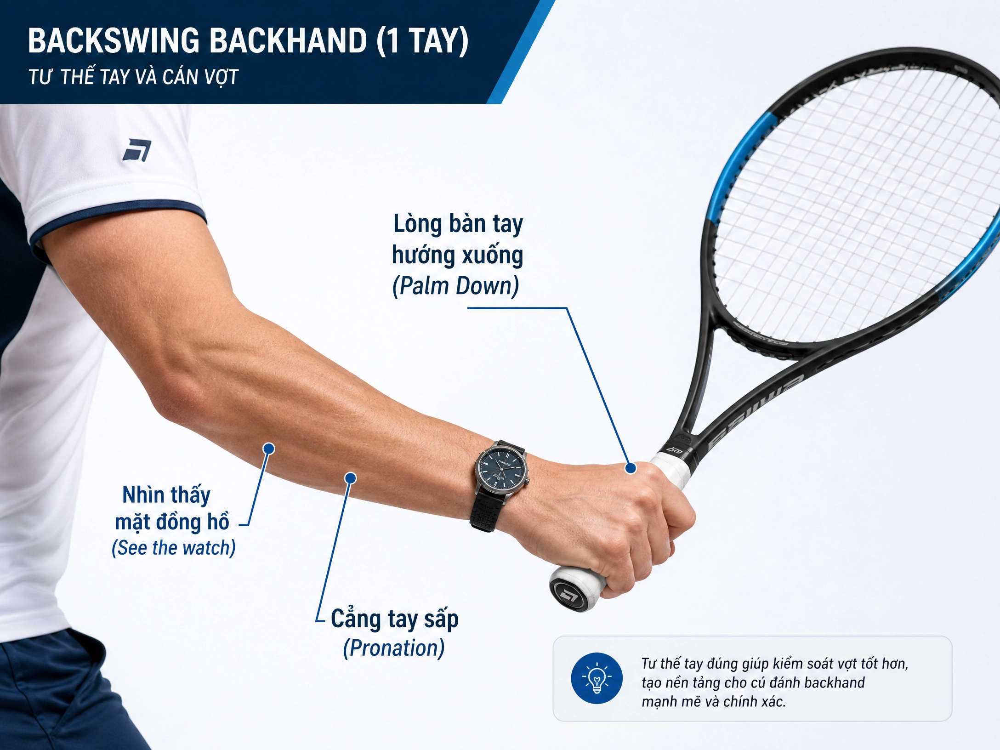
EN: Backhand Mechanics Diagram
VI: Sơ đồ Cơ học cú Backhand
Quality: 4/5 (vision-QA, June 2026) · Path: backhand_palm_down.png
Anatomical cheat-sheet for the two-handed backhand — locked shoulders, side-on stance, color-coded muscle groups, bilingual VI+EN labels.
CUE (EN)
"Two-handed backhand = locked shoulders + side-on stance. Front leg straight, back leg bent. The non-dominant arm pulls; the dominant arm guides."
CUE (VI)
"Backhand 2 tay = khóa vai + stance nghiêng. Chân trước duỗi, chân sau gập. Tay không thuận kéo; tay thuận dẫn hướng."
What the diagram is saying
- Title: 'BACKHAND MECHANICS DIAGRAM' — sourced from PXL_20260614_170745798.jpg
- Anatomical figure: side-on stance, racket drawn back, semi-open body position, front leg straight, back leg bent.
- Color-coded muscle groups: dominant ('Tay/Chân thực') vs non-dominant ('Tay/Chân hư') arm/leg roles.
- Bilingual VI+EN labels: distinguishes L shoulder / R shoulder, true-arm vs phantom-arm roles.
Practical Instructions (Hướng Dẫn Thực Hành)
1. Stand side-on, racket in front of chest, both hands on the racket for stability.
1. Đứng nghiêng bên, vợt trước ngực, hai tay trên vợt để ổn định.
2. Use Continental grip (or Eastern for one-hander) — index knuckle on bevel 2 or 3.
2. Dùng grip Continental (hoặc Eastern cho one-hander) — đốt ngón trỏ trên bevel 2 hoặc 3.
3. Coil the shoulders, hinge the wrist back, then rotate the hip to drive the swing.
3. Xoắn vai, bản lề cổ tay ra sau, rồi xoay hông để dẫn cú vung.
4. At contact: meet the ball out in front, racket face vertical, chest compressing forward.
4. Ở tiếp xúc: gặp bóng phía trước, mặt vợt dọc, ngực nén về trước.
5. Biceps locked to chest, follow-through wraps around the left shoulder for the two-hander.
5. Biceps khóa vào ngực, follow-through vòng qua vai trái cho two-hander.
EN: The 5-Point Switch: 1H to 2H Backhand
VI: 5 điểm chuyển tay: 1H sang 2H Backhand
Quality: 3/5 (vision-QA, June 2026) · Path: Volley Less Is More Blueprint.png
Reuse of volley blueprint as a contrast piece: 1H requires one mentality, 2H requires unlearning 3 reflexes. (Caption placeholder until a more specific 2H image is curated.)
CUE (EN)
"Switching 1H→2H: unlearn 3 reflexes — wait ball deep, lead with right hand, fixed cross-step. 2H needs early contact, left-arm dominance, hip rotation."
CUE (VI)
"Chuyển 1H→2H: bỏ 3 phản xạ — chờ bóng xa, tay phải dẫn, bước chéo cố định. 2H cần đánh sớm, tay trái làm chủ, xoay hông."
What the diagram is saying
- Reused image — full content about the 1H→2H transition is in the source notes, not in the image.
- Image serves as a visual anchor for the 'less is more' philosophy that also applies to backhand switching.
- Use this as a contrast page: simpler is better when changing strokes.
Practical Instructions (Hướng Dẫn Thực Hành)
1. Unlearn 3 reflexes: stop waiting for the ball to come deep — contact earlier.
1. Bỏ 3 phản xạ: dừng chờ bóng xa — tiếp xúc sớm hơn.
2. Stop leading with the right hand — let the left arm dominate the swing direction.
2. Dừng dẫn bằng tay phải — để tay trái làm chủ hướng vung.
3. Stop the fixed cross-step — learn to rotate the hips and lower the body instead.
3. Dừng bước chéo cố định — học xoay hông và hạ thấp thân.
4. Make early contact, around waist height, instead of waiting for the ball to drop.
4. Tiếp xúc sớm, khoảng ngang hông, thay vì chờ bóng rơi.
5. Use hip rotation to generate power — the arms transfer, the body creates.
5. Dùng xoay hông để tạo lực — tay truyền, thân tạo.
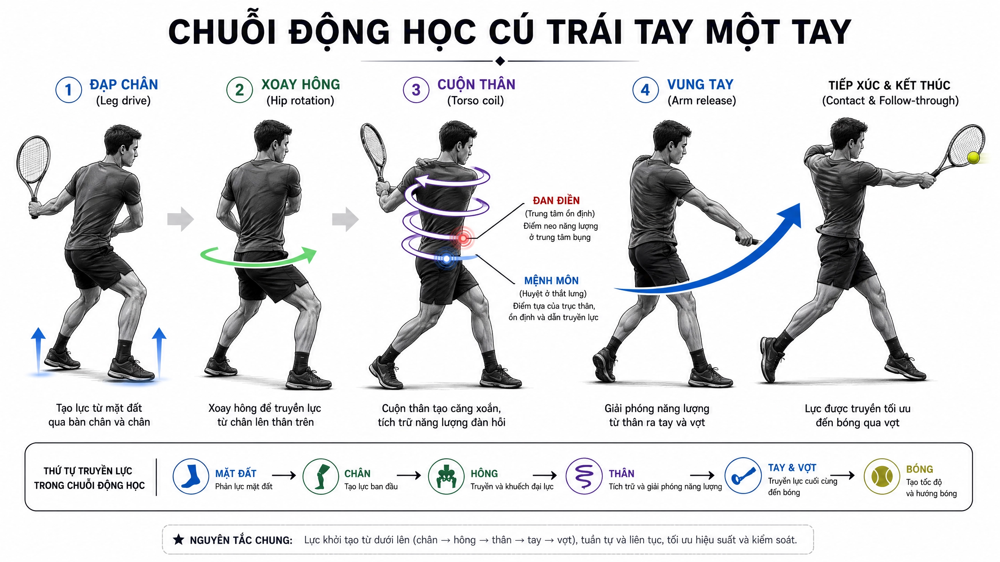
EN: Integrated arm-racket system (forehand/backhand/slice)
Quality: 4/5 (vision-QA, June 2026) · Path: chuoi_dong_hoc_trai_tay.png
Integrated arm-racket system (forehand/backhand/slice)
CUE (EN)
"1. Arm and racket are one unit 2. The system has a single weight 3. Move the unit, not the parts 4. Forearm is the connector 5. Wrist is the hinge, not the engine 6. Shoulder drives the unit 7. Slice rules: lead with the butt 8. Forearm rotates inside the unit 9. The whole arm is the kinetic chain 10. Treat it as a sword, not a hammer"
CUE (VI)
"1. Tay và vợt là một đơn vị 2. Hệ thống có một trọng lượng duy nhất 3. Di chuyển đơn vị, không phải các phần 4. Cẳng tay là connector 5. Cổ tay là bản lề, không phải động cơ 6. Vai điều khiển đơn vị 7. Luật slice: dẫn bằng đáy vợt 8. Cẳng tay xoay bên trong đơn vị 9. Cả cánh tay là chuỗi động học 10. Coi nó là kiếm, không phải búa"
What the diagram is saying
- Diagrammatic illustration: Integrated arm-racket system (forehand/backhand/slice)
Practical Instructions (Hướng Dẫn Thực Hành)
1. Treat the arm and racket as one unit — one weight, one swing, one connection.
1. Coi tay và vợt là một đơn vị — một trọng lượng, một cú vung, một kết nối.
2. Move the unit, not the parts — the forearm is the connector, shoulder drives the unit.
2. Di chuyển cả đơn vị, không từng phần — cẳng tay là connector, vai dẫn đơn vị.
3. Forehand, backhand, slice all use the same integrated principle: whole-arm is one piece.
3. Forehand, backhand, slice đều dùng cùng nguyên lý hợp nhất: cả-tay là một mảnh.
4. At contact, the wrist is stable, the arm extends through the ball, the body commits forward.
4. Ở tiếp xúc, cổ tay ổn định, tay duỗi qua bóng, thân commit tới.
5. Recovery: wrap around the shoulder, return to ready, do not flick the racket head.
5. Hồi phục: vòng qua vai, về tư thế sẵn sàng, không flick đầu vợt.
3 takeaway cuối
- (1) 2H backhand = locked shoulders + side-on stance. Đừng để vai bung sớm.
- (2) Tay trái (với người thuận tay phải) là động cơ chính, không phải tay phải. Phải 'unlearn' cảm giác dẫn bằng tay thuận.
- (3) 3 phản xạ phải bỏ: chờ bóng xa, dùng tay phải dẫn, bước chéo cố định. Shadow 2H không bóng, tay trái cầm vợt đánh thuận tay, tay phải chỉ đặt nhẹ.
Drills tham khảo (20-min practice)
- 5 phút Shadow 2H: tay trái cầm vợt đánh thuận tay, tay phải chỉ đặt nhẹ. Không bóng.
- 5 phút Wall rally với grip 2H: đánh vào tường 3m, tập điểm chạm gần ngực thay vì với xa.
- 5 phút Take-back 2H: vung 2 tay ra sau cùng lúc, vai trái gần như quay về lưới. Không dùng cú 1H take-back ngắn.
- 5 phút Drop drill: hạ gối sâu + drop racket head. Bóng thấp = cú 2H cần drop nhiều hơn 1H.
End of BACKHAND
Henry Pham · Visual Coaching Library · Pilot Series · June 2026
TOPIC 7 of 11
FOOTWORK 5R Ready-Read-React-Respond-Recover
— verso —
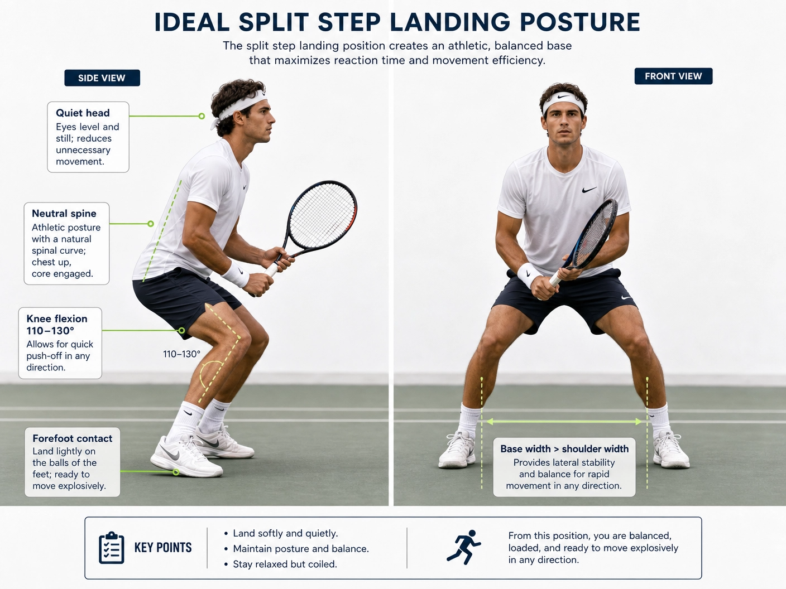
EN: Foot Placement: Inside Foot, 90° Stance
VI: Vị trí chân: chân trong, stance 90°
Quality: 3/5 (vision-QA, June 2026) · Path: split_step_posture.png
Open-stance footwork cheat-sheet: plant inside foot perpendicular to baseline; cross-court = inside foot, down-the-line = outside leg.
CUE (EN)
"Plant the inside foot perpendicular to the line — cross-court goes from the inside foot, down-the-line from the outside leg."
CUE (VI)
"Đặt chân trong vuông góc với baseline — cross-court từ chân trong, down-the-line từ chân ngoài."
What the diagram is saying
- Top callouts: 'Follows' and 'Step out' — two open-stance patterns (follow-through vs recover to centre).
- Central 90° foot-angle diagram: feet perpendicular to baseline, weight loaded on inside foot.
- Court diagram with arrows showing shot direction (cross-court vs down-the-line).
- Hand-drawn notebook style matching the source notes (PXL_*.jpg references).
Practical Instructions (Hướng Dẫn Thực Hành)
1. Plant the inside foot (right foot for forehand) pointing at the sideline.
1. Trồng chân trong (chân phải cho forehand) hướng về đường biên.
2. Rotate the foot 90° to the court, hip opens, weight transfers forward.
2. Xoay chân 90° về sân, hông mở, trọng lượng chuyển tới.
3. Stagger the other foot behind, ready to push off in any direction.
3. So le chân kia ra sau, sẵn sàng đẩy theo bất kỳ hướng nào.
4. Avoid the open stance as default — use 90° for power, open only for emergency recovery.
4. Tránh open stance làm mặc định — dùng 90° cho lực, open chỉ cho phục hồi khẩn cấp.
5. Push off the back foot immediately after contact to recover to the middle.
5. Đẩy chân sau ngay sau tiếp xúc để phục hồi về giữa.
EN: Ready Stance: Not Flat-Footed, Not Too Unbalanced
VI: Stance sẵn sàng: không flat, không lệch
Quality: 4/5 (vision-QA, June 2026) · Path: forehand_2_loading.png
Reused from forehand card 2 — hand-drawn stick figure of legs only with COG, FHGS/BHGS reference table, front leg flat + back leg heel-up.
CUE (EN)
"Ready stance = front leg flat (brake) + back leg heel-up (accelerator). Staggered, not square. One bounce = ready."
CUE (VI)
"Stance sẵn sàng = chân trước flat (phanh) + chân sau nhón gót (ga). So le không vuông. Một bounce = sẵn sàng."
What the diagram is saying
- Stick figure (legs only) with 3 annotations: COG = IN the base, back leg = bent, front leg = straight.
- Reference table: FHGS = front leg = Left / back leg = Right; BHGS = front leg = Right / back leg = Left.
- Hand-drawn pencil-sketch style matching the source notes aesthetic.
Practical Instructions (Hướng Dẫn Thực Hành)
1. Front leg flat (brake), back leg heel-up (accelerator) — staggered, not square.
1. Chân trước phẳng (phanh), chân sau nhón gót (ga) — so le, không vuông.
2. Weight on the balls of both feet, knees soft, body ready to move in any direction.
2. Trọng lượng trên mũi cả hai chân, gối mềm, thân sẵn sàng di chuyển mọi hướng.
3. One bounce = ready — use the bounce to feel the ground, not to shift weight side-to-side.
3. Một bounce = sẵn sàng — dùng bounce để cảm nhận đất, không để đu chuyển trọng lượng.
4. If you can bounce, shuffle, or change direction without resetting, you're in it.
4. Nếu có thể bounce, shuffle, đổi hướng mà không reset chân, bạn đang ở trong nó.
5. Staggered step: 1 foot in front, 1 foot behind, always ready, never flat-footed.
5. Bước so le: 1 chân trước, 1 chân sau, luôn sẵn sàng, không flat-footed.
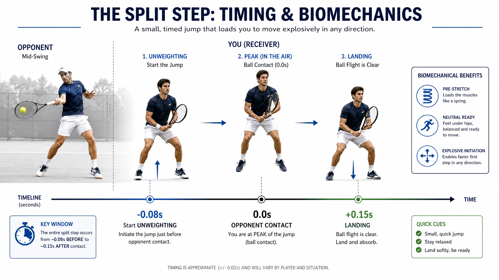
EN: Footwork stances
Quality: 4/5 (vision-QA, June 2026) · Path: split_step_timing_diagram.png
Footwork stances
CUE (EN)
"1. Open stance = power, both feet planted 2. Closed stance = control, weight transfer 3. Neutral stance = balance, mid-court 4. Push by back leg, bridge by front 5. Bend back, straight front 6. COG = in the base, not over it 7. Square stance for transitions 8. Open stance for emergency 9. Low center of gravity in neutral 10. Stance = foundation, always"
CUE (VI)
"1. Stance mở = lực, cả hai chân cắm đất 2. Stance đóng = kiểm soát, chuyển trọng tâm 3. Stance trung tính = cân bằng, giữa sân 4. Đẩy bằng chân sau, bắc cầu bằng chân trước 5. Chân sau gập, chân trước thẳng 6. COG = trong đế, không trên đế 7. Stance vuông cho chuyển tiếp 8. Stance mở cho tình huống khẩn cấp 9. Trọng tâm thấp ở stance trung tính 10. Stance = nền tảng, luôn luôn"
What the diagram is saying
- Diagrammatic illustration: Footwork stances
Practical Instructions (Hướng Dẫn Thực Hành)
1. Open stance: power, quick recovery, but burns energy — use for emergency shots.
1. Open stance: lực, phục hồi nhanh, nhưng tốn năng lượng — dùng cho cú khẩn cấp.
2. Closed stance: control, more time to set up — use for high balls and slices.
2. Closed stance: kiểm soát, nhiều thời gian setup — dùng cho bóng cao và slice.
3. Neutral stance: balance, transition between open and closed — use for mid-court shots.
3. Neutral stance: cân bằng, chuyển tiếp giữa open và closed — dùng cho bóng giữa sân.
4. Push by back leg, bridge by front leg — every stance has a power side and a brake side.
4. Đẩy bằng chân sau, cầu bằng chân trước — mọi stance có bên lực và bên phanh.
5. Match stance to ball height: low balls need open stance, high balls need closed.
5. Khớp stance với độ cao bóng: bóng thấp cần open, bóng cao cần closed.
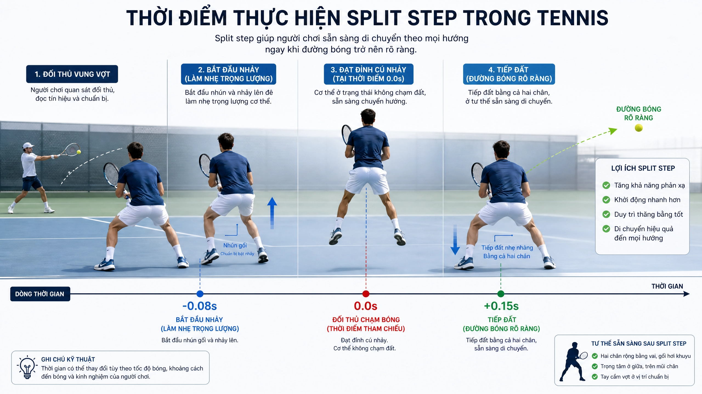
EN: split step footwork
Quality: 4/5 (vision-QA, June 2026) · Path: so_do_thoi_diem_split_step.png
split step footwork
CUE (EN)
"1. Hop on their contact, not after 2. Small hop, not big jump 3. Land on balls of feet 4. Cat feet, not kangaroo 5. Split is the launch pad 6. Mistime by half a beat = late 7. Fast rally = split earlier 8. Slow dinker = delay split 9. Split = readiness signal to brain 10. Practice 10 splits in living room"
CUE (VI)
"1. Nhảy lúc họ tiếp xúc, không sau 2. Nhảy nhỏ, không nhảy cao 3. Tiếp đất trên mũi chân 4. Chân mèo, không chân kangaroo 5. Split là bệ phóng 6. Lệch nửa nhịp = trễ 7. Trao đổi nhanh = split sớm hơn 8. Bóng chậm = trễ split 9. Split = tín hiệu sẵn sàng cho não 10. Tập 10 split ở phòng khách"
What the diagram is saying
- Diagrammatic illustration: split step footwork
Practical Instructions (Hướng Dẫn Thực Hành)
1. Hop on their contact, not after — the split step is timed to the opponent's strike.
1. Nhảy ở thời điểm đối thủ chạm bóng, không phải sau — split step định giờ theo cú đánh của họ.
2. Cat feet, not kangaroo — low, quiet, controlled, both feet leave the ground together.
2. Chân mèo, không phải kangaroo — thấp, êm, kiểm soát, cả hai chân rời đất cùng lúc.
3. Land on the balls of the feet, weight forward, ready to move in any direction.
3. Tiếp đất trên mũi chân, trọng lượng tới, sẵn sàng di chuyển mọi hướng.
4. Practice 10 split steps at home with a metronome — make it automatic, not conscious.
4. Tập 10 split step ở nhà với metronome — biến thành tự động, không ý thức.
5. Without split step, you start every rally a half-step behind — split step is the launch pad.
5. Không split step, bạn bắt đầu mỗi rally nửa bước sau — split step là bệ phóng.

EN: Ready & Racket Prep position
Quality: 4/5 (vision-QA, June 2026) · Path: tennis_footwork_comparison.png
Ready & Racket Prep position
CUE (EN)
"1. Racket up before the ball 2. Butt cap points to net 3. Two-hand grip until you decide 4. Opposite hand tension = ready 5. Staggered feet, not square 6. Front leg flat, back leg heel-up 7. One bounce = ready 8. Don't drop the racket head 9. Toss and split = automatic prep 10. Prep before decision, not after"
CUE (VI)
"1. Vợt lên trước khi bóng đến 2. Đáy cán vợt hướng lưới 3. Cầm hai tay cho đến khi quyết định 4. Tay đối diện căng = sẵn sàng 5. Chân so le, không vuông 6. Chân trước flat, chân sau nhón gót 7. Một bounce = sẵn sàng 8. Đừng để đầu vợt rơi 9. Toss và split = chuẩn bị tự động 10. Chuẩn bị trước quyết định, không sau"
What the diagram is saying
- Diagrammatic illustration: Ready & Racket Prep position
Practical Instructions (Hướng Dẫn Thực Hành)
1. Racket up, butt cap pointing to the net — do not let the racket head drop below the hand.
1. Vợt lên, butt cap chỉ về lưới — đừng để đầu vợt rơi thấp hơn tay.
2. Staggered feet, weight on the balls, knees soft, head still, eyes on the opponent.
2. Chân so le, trọng lượng trên mũi, gối mềm, đầu yên, mắt nhìn đối thủ.
3. Prep before the decision is made — by the time you read the direction, racket is already up.
3. Prep trước khi quyết định — khi bạn đọc hướng, vợt đã lên rồi.
4. The non-dominant hand supports the throat of the racket for stability and quick transitions.
4. Tay không thuận giữ cổ vợt để ổn định và chuyển trạng thái nhanh.
5. From ready, the next move is split step — ready is the start, not the end.
5. Từ ready, bước tiếp theo là split step — ready là khởi đầu, không phải kết thúc.
3 takeaway cuối
- (1) Ready = cat feet (low, quiet) chứ không phải kangaroo hop. Time split-step vào lúc đối thủ đánh, không phải sau.
- (2) Shuffle khi có thể, cross-step khi buộc phải. Tránh back-pedal với lobs — pivot, open hips, cross-step backward.
- (3) Recover = 2-3 bước về vị trí trung lập. Đừng đứng ngắm bóng — automatic split-move-strike-recover.
Drills tham khảo (20-min practice)
- 5 phút 10 split-steps với metronome ở nhà. Cat-feet (low, quiet), không high-jump.
- 5 phút Partner 'call shot': partner feed không báo trước, bạn gọi 'forehand' hoặc 'backhand' ngay khi thấy prep.
- 5 phút Shadow swing trong tất (no-shoes): buộc stabilizers làm việc, dạy micro-steps.
- 5 phút Wide-ball recovery: 3 cú xa trái/phải liên tiếp → 2-3 cross-step + shuffle về middle.
End of FOOTWORK
Henry Pham · Visual Coaching Library · Pilot Series · June 2026
TOPIC 8 of 11
GRIP Loose → Firm only at Impact — Grip Types vs Spin
— verso —
EN: Slingshot Grip — Pre-stretched Tension
VI: Grip Sling-shot — Căng trước khi đánh
Quality: 3/5 (vision-QA, June 2026) · Path: How to hold a grip.png
Two-hand demo of slingshot grip: fingers cover handle, palm rests racket, gravity drops racket head for whip acceleration.
CUE (EN)
"Slingshot grip: handle rests in palm, fingers just cover (not grip). At release, gravity drops the racket head — that's where the whip comes from."
CUE (VI)
"Grip sling-shot: cán vợt nằm trong lòng bàn tay, ngón tay chỉ che (không bóp). Khi thả, trọng lực kéo đầu vợt rơi — đó là nguồn whip."
What the diagram is saying
- Top: upper hand in relaxed position over racket head area.
- Bottom: lower hand gripping the butt of the handle (palm not fingers).
- Handwritten callouts: 'Sling-shot grip (Pre-stretched tensions)', 'Racket handle only rests on left palm', 'Fingers not holding but gently cover', 'Gravity pull on release / Racket head will slide'.
- Background: PXL_*.jpg reference (the source handwritten notes).
Practical Instructions (Hướng Dẫn Thực Hành)
1. Hold the racket with two fingers only: thumb and middle finger on the handle.
1. Cầm vợt chỉ bằng hai ngón: ngón cái và ngón giữa trên cán.
2. Three fingers (index, ring, pinky) gently cover but do not grip — release ready.
2. Ba ngón (trỏ, áp út, út) phủ nhẹ nhưng không cầm — sẵn sàng thả.
3. Drop the racket: feel the head fall, gravity does the work of the swing.
3. Thả vợt: cảm nhận đầu vợt rơi, trọng lực làm việc của cú vung.
4. Pre-stretch the tendons — like a slingshot, the more you stretch, the more energy stored.
4. Pre-stretch gân — như sling-shot, kéo căng càng nhiều, năng lượng càng nhiều.
5. At contact, the slingshot releases — racket whips forward without muscular effort.
5. Ở tiếp xúc, sling-shot bung — vợt quất tới mà không cần lực cơ bắp.
EN: Grip + Contact Point + Trajectory
VI: Grip + Điểm tiếp xúc + Quỹ đạo bóng
Quality: 4/5 (vision-QA, June 2026) · Path: forehand_palm_up.png
Forehand grip vs contact-point vs trajectory (4/5 keeper from 198-image sweep).
CUE (EN)
"Western = upper contact, topspin. Continental = lower contact, slice. The grip determines WHERE you meet the ball, and WHERE determines the spin."
CUE (VI)
"Western = tiếp xúc trên, topspin. Continental = tiếp xúc dưới, slice. Grip quyết định BẠN GẶP BÓNG Ở ĐÂU, và đó quyết định xoáy."
What the diagram is saying
- Side-by-side comparison: Eastern/Semi-Western grips vs Continental grip.
- Each grip shows ball contact location on the string bed (upper vs lower).
- Trajectory arrows: how open/closed racket face changes ball flight.
- Topspin-friendly vs slice-friendly grip positions.
Practical Instructions (Hướng Dẫn Thực Hành)
1. Continental grip (bevel 2) for slice, serve, volley — face perpendicular, low contact point.
1. Continental (bevel 2) cho slice, serve, volley — mặt vuông góc, điểm tiếp xúc thấp.
2. Eastern grip (bevel 3) for flat shots — face vertical, mid contact point.
2. Eastern (bevel 3) cho cú phẳng — mặt dọc, điểm tiếp xúc giữa.
3. Semi-Western (bevel 4) for topspin — face slightly closed, low-to-mid contact.
3. Semi-Western (bevel 4) cho topspin — mặt hơi đóng, thấp-tới-giữa.
4. Western (bevel 5) for heavy topspin — face closed, very low contact, big brushing motion.
4. Western (bevel 5) cho topspin nặng — mặt đóng, rất thấp, quét lớn.
5. Match grip to ball height: low ball = more Western, high ball = more Eastern/Continental.
5. Khớp grip với độ cao bóng: bóng thấp = Western nhiều hơn, bóng cao = Eastern/Continental.
EN: Grip
Quality: 4/5 (vision-QA, June 2026) · Path: forehand_palm_up.png
Grip / forearm rotation / racket face angle (FH-BH combo systems)
CUE (EN)
"1. Face angle = ball direction 2. Open face = topspin or lift 3. Closed face = slice or drive 4. Adjust face before contact, not at 5. 5° tilt = small change in direction 6. 20° tilt = large change 7. Paddle face is your steering wheel 8. Forehand face rotates through contact 9. Backhand face stays flatter 10. Watch the strings, not the head"
CUE (VI)
"1. Góc mặt vợt = hướng bóng 2. Mặt mở = topspin hoặc nâng 3. Mặt đóng = slice hoặc drive 4. Điều chỉnh mặt trước tiếp xúc, không tại 5. 5° nghiêng = thay đổi nhỏ hướng 6. 20° nghiêng = thay đổi lớn 7. Mặt vợt là vô-lăng 8. Mặt forehand xoay qua tiếp xúc 9. Mặt backhand giữ phẳng hơn 10. Nhìn dây, không phải đầu vợt"
What the diagram is saying
- Diagrammatic illustration: Grip / forearm rotation / racket face angle (FH-BH combo systems)
Practical Instructions (Hướng Dẫn Thực Hành)
1. Cầm vợt lỏng — không quá chặt (hold loose, not too tight) — 3-4/10 grip pressure.
1. Cầm vợt lỏng — không quá chặt — 3-4/10 áp lực grip.
2. Siết chỉ khi chạm bóng (squeeze only at contact) — 7-8/10, then release immediately.
2. Siết chỉ khi chạm bóng — 7-8/10, rồi thả ngay.
3. Cán vợt phải trượt nhẹ trong lòng bàn tay (handle slides slightly in palm) for adjustments.
3. Cán vợt phải trượt nhẹ trong lòng bàn tay để điều chỉnh.
4. Càng kín càng tốt để tránh bị rò — but tight only at contact, not during prep.
4. Càng kín càng tốt để tránh rò — nhưng chỉ chặt ở tiếp xúc, không trong prep.
5. Switch grip ở lưới (switch grip at net) — practice the transition between grip types.
5. Switch grip ở lưới — tập chuyển tiếp giữa các loại grip.
EN: Palm Up
Quality: 4/5 (vision-QA, June 2026) · Path: volley_early_set.png
Palm Up / Palm Down racket face control + kinematic chain + volley
CUE (EN)
"Master-coach focus: Palm Up / Palm Down racket face control + kinematic chain + volley"
CUE (VI)
"[Bản dịch VI: đang chờ — cần Henry viết cue VI tự nhiên cho chủ đề này]"
What the diagram is saying
- Diagrammatic illustration: Palm Up / Palm Down racket face control + kinematic chain + volley
Practical Instructions (Hướng Dẫn Thực Hành)
1. Forehand: palm up at contact — the palm knows where the ball goes.
1. Forehand: lòng bàn tay lên ở tiếp xúc — lòng bàn tay biết bóng đi đâu.
2. Paddle analogy: a paddle has a face, the palm IS the face of the racket.
2. Phép so sánh mái chèo: mái chèo có mặt, lòng bàn tay chính là mặt của vợt.
3. Vertical palm = neutral position — default starting point for any shot.
3. Lòng bàn tay dọc = vị trí trung tính — điểm bắt đầu mặc định cho mọi cú.
4. Tilt palm up = open face = lift the ball (topspin). Tilt palm down = closed face = drive.
4. Nghiêng lòng bàn tay lên = mặt mở = nâng bóng (topspin). Xuống = mặt đóng = đập.
5. Backhand: palm down at contact — same logic, opposite face angle.
5. Backhand: lòng bàn tay xuống ở tiếp xúc — cùng logic, góc mặt vợt ngược lại.
3 takeaway cuối
- (1) Grip sống, không phải grip chết. Lỏng khi chuẩn bị (3-4/10), siết chỉ khi tiếp xúc (7-8/10). Cán vợt phải trượt nhẹ trong lòng bàn tay.
- (2) Grip quyết định điểm chạm. Western (trên) = topspin, Continental (dưới) = slice.
- (3) Finger power: lực chính đến từ ngón trỏ + ngón cái. Lòng bàn tay ôm 360°, không có khe hở → không leak lực.
Drills tham khảo (20-min practice)
- 5 phút Grip squeeze: cầm vợt lỏng 3-4/10 trong 5 giây → siết 7-8/10 trong 1 giây → lỏng lại. Lặp 20 lần.
- 5 phút Switch grip ở lưới: volley Continental → cú topspin Semi-Western → quay lại Continental. Tập cổ tay xoay.
- 5 phút Shadow forehand với grip awareness: mỗi cú, nói to grip đang dùng (Eastern/Semi-Western/Western).
- 5 phút 1Hto2H switch grip drill: 1H với Continental grip → đổi sang 2H (cả 2 tay Continental). Bóng chậm từ basket.
End of GRIP
Henry Pham · Visual Coaching Library · Pilot Series · June 2026
TOPIC 9 of 11
BIOMECHANICS Chain Reaction — Ground Up, Brain-Body Integration
— verso —
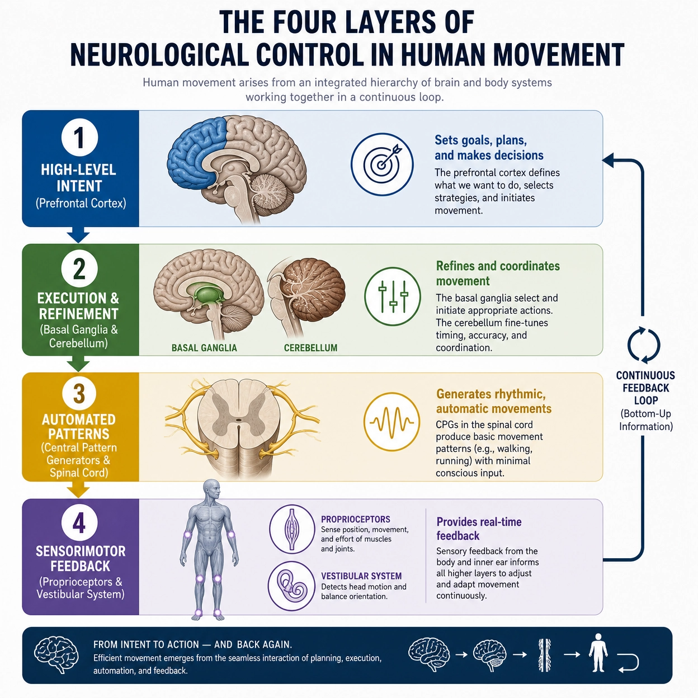
EN: Ball Tracking: Biomechanics & Neural Processing
VI: Theo dõi bóng: Cơ sinh học & Xử lý thần kinh
Quality: 4/5 (vision-QA, June 2026) · Path: neurological_control_hierarchy.png
4-quadrant neuro-biomechanics: Postural Action, Visual Processing, Mechanism (Eyes→Brain→CNS), Synthesis. Bilingual VI+EN.
CUE (EN)
"Still head + relaxed muscles + fixed gaze = predictive tracking. Don't stare at the ball — let the gaze predict WHERE it will be."
CUE (VI)
"Đầu yên + cơ thư giãn + gaze cố định = theo dõi dự đoán. Đừng nhìn chằm chằm vào bóng — để gaze dự đoán NƠI bóng sẽ đến."
What the diagram is saying
- Quadrant 1 — The Action: Postural cues (still head, relaxed muscles, fixed gaze vs physical gaze).
- Quadrant 2 — Visual Processing Systems: VOR (Vestibulo-Ocular Reflex), cervical spine, inner ear.
- Quadrant 3 — The Mechanism: Reprogramming flow Eyes → Brain → Central Nervous System.
- Quadrant 4 — Synthesis: Gaze → Critical Moment → Data → Transcendent Ball Prediction.
- Vietnamese caption: 'Thiết lập lại hệ thống quan sát bóng' (Re-establish the ball-observation system).
Practical Instructions (Hướng Dẫn Thực Hành)
1. Keep the head still, relax the muscles, fix the gaze on the ball through contact.
1. Giữ đầu yên, thả lỏng cơ, cố định ánh mắt trên bóng qua tiếp xúc.
2. Use the VOR (Vestibulo-Ocular Reflex) — let the cervical spine and inner ear stabilize the gaze.
2. Dùng VOR (Vestibulo-Ocular Reflex) — để cổ và tai trong ổn định ánh mắt.
3. Reprogram the Eyes → Brain → Central Nervous System flow with consistent practice.
3. Lập trình lại dòng Mắt → Não → Hệ Thần Kinh Trung Ương với tập nhất quán.
4. Gaze → Critical Moment → Data → Transcendent Ball Prediction — feel the ball, don't think.
4. Gaze → Khoảnh Khắc Quan Trọng → Dữ Liệu → Dự Đoán Bóng Siêu Việt — cảm bóng, đừng nghĩ.
5. Re-establish the ball-observation system daily: 5 minutes of focused tracking before play.
5. Tái lập hệ quan sát bóng hàng ngày: 5 phút tập trung theo dõi trước khi chơi.
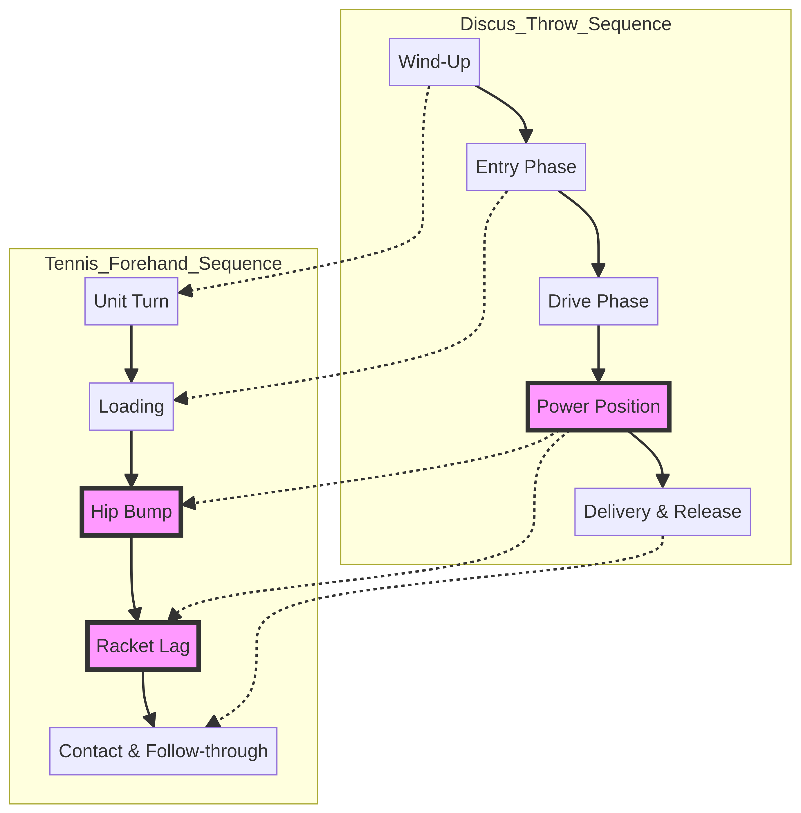
EN: The Mechanics of Modern Tennis (Overview)
VI: Cơ học Tennis Hiện đại (Tổng quan)
Quality: 4/5 (vision-QA, June 2026) · Path: The Mechanics of Modern Tennis.png
Comprehensive multi-panel overview: 4 grip types, kinetic chain, 4-stage serve model, speed benchmarks (Zverev 136/132 MPH, Martinez 129 MPH).
CUE (EN)
"95% of tennis power comes from the ground, not the arm. The arm is the last link. The body is the engine."
CUE (VI)
"95% lực tennis đến từ mặt đất, không phải tay. Tay là khâu cuối. Cơ thể mới là động cơ."
What the diagram is saying
- Section 1 — 4 Grip Types: Continental, Eastern, Semi-Western, Western with court impact zones.
- Section 2 — Kinetic Chain: 95% of energy from ground reaction force, flowing up through legs → core → arm.
- Section 3 — 4-Stage Serve: Trigger → Trophy → Acceleration → Contact.
- Section 4 — Speed Benchmarks: Zverev FH 136 MPH, BH 132 MPH; Martinez 129 MPH.
- Section 5 — Stretch-Shortening Cycle: energy storage in core/hips/hamstrings.
Practical Instructions (Hướng Dẫn Thực Hành)
1. Tennis is played on a 2D court but won in 3D space — think of the body as a 3D chain.
1. Tennis chơi trên sân 2D nhưng thắng trong không gian 3D — nghĩ cơ thể là chuỗi 3D.
2. GRF (Ground Reaction Force) flows from the ground up: feet → legs → hips → torso → arms → racket.
2. GRF (Lực Phản Ứng Mặt Đất) chảy từ đất lên: chân → đùi → hông → thân → tay → vợt.
3. SSC (Stretch-Shorten Cycle) — the body stores elastic energy in the load phase, releases in the swing.
3. SSC (Chu Trình Kéo-Ngắn) — cơ thể tích năng lượng đàn hồi khi nạp, giải phóng khi vung.
4. Core is the agentic hub — every segment rotation passes through the trunk.
4. Core là hub agentic — mọi xoay phân đoạn đều đi qua thân.
5. Modern tennis is embodied tennis: connect every segment, do not isolate parts.
5. Tennis hiện đại là tennis nhập thể: kết nối mọi phân đoạn, không cô lập phần.

EN: Tension integrity
Quality: 5/5 (vision-QA, June 2026) · Path: kinematic_chain_flow.png
Tension integrity / kinetic chain
CUE (EN)
"1. Tension is the engine, not the enemy 2. Connected tension = ready tension 3. Load before launch, not during 4. Stretch, then shorten, then cycle 5. The chain has only one weak link 6. Shoulder to hip = kinetic integrity 7. Tension drops before contact 8. Tight at start, loose at impact 9. Core = the tension hub 10. Breathe through the tension"
CUE (VI)
"1. Căng là động cơ, không phải kẻ thù 2. Căng kết nối = căng sẵn sàng 3. Nạp trước phóng, không trong khi 4. Căng, rồi rút ngắn, rồi tuần hoàn 5. Chuỗi chỉ có một mắt yếu 6. Vai đến hông = toàn vẹn động học 7. Căng giảm trước tiếp xúc 8. Chặt lúc đầu, lỏng ở tiếp xúc 9. Core = trung tâm căng 10. Thở qua sự căng"
What the diagram is saying
- Diagrammatic illustration: Tension integrity / kinetic chain
Practical Instructions (Hướng Dẫn Thực Hành)
1. Tension is the engine, not the enemy — connected tension is ready tension.
1. Căng là động cơ, không phải kẻ thù — căng kết nối là căng sẵn sàng.
2. Load before launch: store elastic energy in the body before initiating the swing.
2. Nạp trước khi phóng: tích năng lượng đàn hồi trong cơ thể trước khi bắt đầu vung.
3. Core = the tension hub — every other segment receives from the trunk.
3. Core = hub căng — mọi phân đoạn khác nhận từ thân.
4. Do not collapse between shots — maintain connected tension throughout the rally.
4. Đừng xẹp giữa các cú — duy trì căng kết nối suốt rally.
5. Release at contact, reload immediately — tension is dynamic, not static.
5. Giải phóng ở tiếp xúc, nạp lại ngay — căng là động, không phải tĩnh.
EN: Serve - Controlled falling (kinetic chain)
Quality: 4/5 (vision-QA, June 2026) · Path: serve_hurkacz_vi.png
Serve - Controlled falling (kinetic chain)
CUE (EN)
"Master-coach focus: Serve - Controlled falling (kinetic chain)"
CUE (VI)
"[Bản dịch VI: đang chờ — cần Henry viết cue VI tự nhiên cho chủ đề này]"
What the diagram is saying
- Diagrammatic illustration: Serve - Controlled falling (kinetic chain)
Practical Instructions (Hướng Dẫn Thực Hành)
1. Drop into the slot — do not reach for the ball, let the racket pull the chest down.
1. Rơi vào slot — đừng với lấy bóng, để vợt kéo ngực xuống.
2. Catch the racket at the bottom of the fall — the weight pulls the arm into pronation.
2. Bắt vợt ở đáy cú rơi — sức nặng kéo tay vào pronation.
3. The fall is where energy lives — heavy weight, gravity, free acceleration.
3. Cú rơi là nơi năng lượng sống — nặng, trọng lực, tăng tốc tự do.
4. Chest compression at the bottom of the slot — torso is fully engaged.
4. Nén ngực ở đáy slot — thân đã gài hoàn toàn.
5. Then extend up: legs drive, hip opens, shoulder whips, racket head accelerates into ball.
5. Rồi duỗi lên: chân đẩy, hông mở, vai quất, đầu vợt tăng tốc vào bóng.
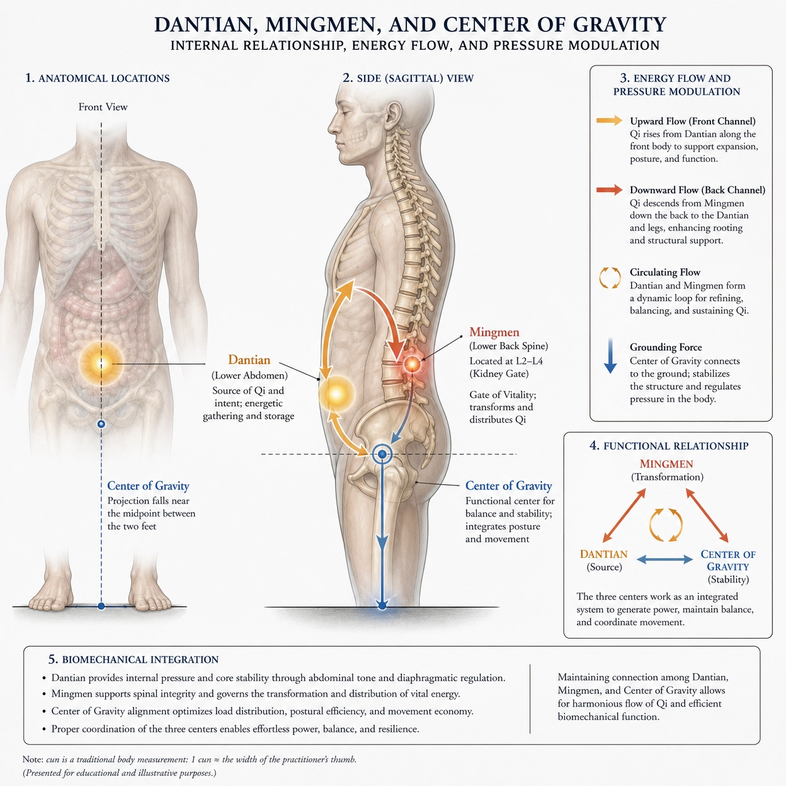
EN: forehand 5-phase biomechanics (Dantian + frisbee analogy)
Quality: 4/5 (vision-QA, June 2026) · Path: dantian_mingmen_cog.png
forehand 5-phase biomechanics (Dantian + frisbee analogy)
CUE (EN)
"1. Phase 1: prepare (split + turn) 2. Phase 2: load (coil + knee bend) 3. Phase 3: launch (uncoil + drive) 4. Phase 4: contact (out front, level) 5. Phase 5: recover (split-step out) 6. 5 phases = full forehand cycle 7. Skip a phase = lose power or accuracy 8. Don't blend phases — feel each 9. Practice each phase separately first 10. Then chain them with rhythm"
CUE (VI)
"1. Pha 1: chuẩn bị (split + xoay) 2. Pha 2: nạp (xoắn + gập gối) 3. Pha 3: phóng (thả xoắn + đẩy) 4. Pha 4: tiếp xúc (phía trước, ngang) 5. Pha 5: phục hồi (split-step ra) 6. 5 pha = toàn bộ chu kỳ forehand 7. Bỏ pha = mất lực hoặc chính xác 8. Đừng trộn pha — cảm nhận từng pha 9. Tập từng pha riêng trước 10. Rồi xích chúng lại với nhịp"
What the diagram is saying
- Diagrammatic illustration: forehand 5-phase biomechanics (Dantian + frisbee analogy)
Practical Instructions (Hướng Dẫn Thực Hành)
1. Phase 1 — Prepare: racket up, weight loaded to back leg, eyes on the ball.
1. Pha 1 — Chuẩn bị: vợt lên, trọng lượng nạp chân sau, mắt theo bóng.
2. Phase 2 — Load: coil the torso, drop the racket into the slot, hip stores energy.
2. Pha 2 — Nạp: xoắn thân, thả vợt vào slot, hông tích năng lượng.
3. Phase 3 — Launch: hip opens, chest turns, shoulder whips, arm extends.
3. Pha 3 — Phóng: hông mở, ngực xoay, vai quất, tay duỗi.
4. Phase 4 — Contact: meet the ball out in front, racket face vertical, weight transfers forward.
4. Pha 4 — Tiếp xúc: gặp bóng phía trước, mặt vợt dọc, trọng lượng chuyển tới.
5. Phase 5 — Recover: wrap around the shoulder, cross-step back to the ready position.
5. Pha 5 — Hồi phục: vòng qua vai, bước chéo về tư thế sẵn sàng.
3 takeaway cuối
- (1) 95% lực từ mặt đất, không phải tay. Cơ thể là động cơ, tay là khâu cuối của chuỗi lực.
- (2) Core = agentic. Core không chỉ 'đọc' bóng, mà còn 'hành động' — xoay, đẩy, redirect.
- (3) Gaze cố định + đầu yên = theo dõi dự đoán. Đừng nhìn chằm chằm — hãy để gaze dự đoán nơi bóng đến.
Drills tham khảo (20-min practice)
- 5 phút Gaze drill: đứng tường, tung bóng từ, mắt NHÌN VÀO TƯỜNG (không phải bóng) cho đến khi bóng chạm.
- 5 phút Shadow với chain awareness: mỗi cú, nói to 'leg → hip → shoulder → arm'. 20 lần.
- 5 phút Ground force drill: nhảy xuống rồi bật lên đánh forehand. Cảm nhận GRF đi từ chân lên tay.
- 5 phút Wall rally với closed eyes: đếm 5 quả trước khi mở mắt. Tập proprioception.
End of BIOMECHANICS
Henry Pham · Visual Coaching Library · Pilot Series · June 2026
TOPIC 10 of 11
STRATEGY Anticipation > Reaction — Tennis as Blitz-Chess
— verso —
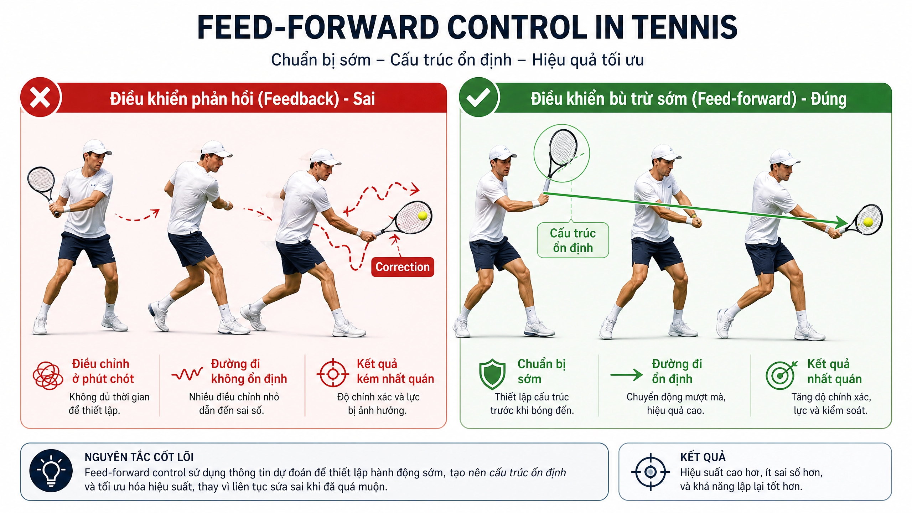
EN: Sensory System for Anticipation: 4-Module Processing
VI: Hệ thống giác quan cho Dự đoán: 4 module xử lý
Quality: 3/5 (vision-QA, June 2026) · Path: feed_forward_control.png
4 modules: Ball Tracking & Sensory Inputs, Brain/CPU, Motor Control, Proprioception Flow. Bilingual VI+EN.
CUE (EN)
"Anticipation = 4 systems working together. Eyes + ears + proprioception + brain → motor output. Train the system, not the stroke."
CUE (VI)
"Dự đoán = 4 hệ thống cùng làm việc. Mắt + tai + proprioception + não → motor. Tập hệ thống, không phải từng cú đánh."
What the diagram is saying
- Module 1 — Ball Tracking & Sensory Inputs: vision, hearing, proprioception, Vestibulo-Ocular Reflex.
- Module 2 — Brain & Central Processing: CNS, thalamus, core as '2nd brain'.
- Module 3 — Motor Control: muscle spindles, spine stability, reflex/automation patterns.
- Module 4 — Proprioception Flow: skeletal body, central coupling [S] vs decoupling [D].
- Vietnamese captions: 'Hệ thống liên giác' (interoceptive system), 'thoi cơ' (muscle spindle), 'Đồng bằng cột sống' (spinal coupling).
Practical Instructions (Hướng Dẫn Thực Hành)
1. Module 1: Visual — read the opponent's body, racket, ball flight from the start.
1. Module 1: Thị giác — đọc cơ thể, vợt, quỹ đạo bóng của đối thủ từ đầu.
2. Module 2: Auditory — listen to the contact sound, the footwork, the breathing pattern.
2. Module 2: Thính giác — nghe tiếng tiếp xúc, bước chân, nhịp thở.
3. Module 3: Proprioceptive — feel your own body's position and balance throughout the rally.
3. Module 3: Cảm giác sâu — cảm nhận vị trí và thăng bằng cơ thể mình suốt rally.
4. Module 4: Cognitive — process the data, predict the next shot, commit early.
4. Module 4: Nhận thức — xử lý dữ liệu, dự đoán cú tiếp theo, commit sớm.
5. Practice all 4 modules actively: shadow rallies, call the next shot before the ball arrives.
5. Tập cả 4 module tích cực: shadow rally, gọi cú tiếp theo trước khi bóng tới.

EN: Future Champion: The Paradigm Shift
VI: Nhà vô địch tương lai: Sự chuyển đổi mô hình
Quality: 3/5 (vision-QA, June 2026) · Path: Future Champion Tennis Blueprint.png
Big loop vs direct path. Old-school (muscle memory) vs modern (neuro-motor pathway control). 4-pillar champion framework.
CUE (EN)
"Big loop ≠ power. Direct path + neuro-motor control = champion. Train the brain, not the muscle memory."
CUE (VI)
"Vòng lớn KHÔNG bằng lực. Đường thẳng + kiểm soát thần kinh-vận động = nhà vô địch. Tập não, không phải trí nhớ cơ."
What the diagram is saying
- Pillar 1 — Traditional Myth vs Modern Reality: large circular loops vs direct racket preparation.
- Pillar 2 — Bio-Slingshot: whip-like kinetic chain, eccentric stretching, super-weapon performance.
- Pillar 3 — Tennis Blitz-Chess: plan moves, anticipate opponent, disguise intentions.
- Pillar 4 — Situational Awareness & Mental Speed: 'ludicrous chess' for high-speed interceptions.
- Side-by-side comparison format with player illustrations.
Practical Instructions (Hướng Dẫn Thực Hành)
1. Old model: muscle memory through repetition. New model: embodied chain through perception.
1. Mô hình cũ: trí nhớ cơ bắp qua lặp lại. Mô hình mới: chuỗi nhập thể qua nhận thức.
2. Old model: technique is the goal. New model: technique emerges from situation.
2. Mô hình cũ: kỹ thuật là mục tiêu. Mô hình mới: kỹ thuật xuất hiện từ tình huống.
3. Champion mindset: every ball is a new problem, not a new repetition of the same stroke.
3. Tư duy nhà vô địch: mỗi bóng là vấn đề mới, không phải lặp lại cùng cú.
4. Train the perception, the stroke follows — read first, then move, then contact.
4. Tập nhận thức, cú đánh sẽ theo — đọc trước, rồi di chuyển, rồi tiếp xúc.
5. The paradigm shift is from doing-the-stroke to reading-and-responding.
5. Sự chuyển đổi mô hình là từ làm-cú-đánh sang đọc-và-đáp-bằng-cú-đánh.

EN: Shot disguise tactic (path A vs B from same prep)
Quality: 4/5 (vision-QA, June 2026) · Path: structural_setpoints_comparison.png
Shot disguise tactic (path A vs B from same prep)
CUE (EN)
"1. Same prep, different path 2. Don't tell your opponent early 3. Hold the racket head still late 4. Change at the last moment 5. Shoulder and hip don't lie 6. Watch shoulders, not ball 7. Disguise starts at the takeback 8. Two paths from one prep = power 9. Pausing the racket is legal 10. Disguise beats pace at 4.0+"
CUE (VI)
"1. Cùng chuẩn bị, đường khác 2. Đừng nói cho đối thủ biết sớm 3. Giữ đầu vợt yên muộn 4. Đổi ở khoảnh khắc cuối 5. Vai và hông không nói dối 6. Nhìn vai, không phải bóng 7. Ngụy trang bắt đầu từ takeback 8. Hai đường từ một chuẩn bị = quyền lực 9. Tạm dừng vợt là hợp lệ 10. Ngụy trang thắng tốc độ ở 4.0+"
What the diagram is saying
- Diagrammatic illustration: Shot disguise tactic (path A vs B from same prep)
Practical Instructions (Hướng Dẫn Thực Hành)
1. Same prep, different path — the opponent reads the prep, not the contact.
1. Cùng prep, đường khác — đối thủ đọc prep, không phải tiếp xúc.
2. Two paths from one prep: topspin (path A) or slice (path B) — both are valid.
2. Hai đường từ một prep: topspin (đường A) hoặc slice (đường B) — cả hai đều hợp lệ.
3. Disguise starts at the takeback — the earlier the disguise, the more effective.
3. Che giấu bắt đầu từ takeback — càng sớm, càng hiệu quả.
4. At 4.0+ levels, disguise beats pace — opponents read prep, not speed.
4. Ở trình 4.0+, che giấu thắng tốc độ — đối thủ đọc prep, không phải speed.
5. Practice the disguise: hit 10 balls with the same prep, alternate spin direction.
5. Tập che giấu: đánh 10 bóng cùng prep, luân phiên hướng xoáy.
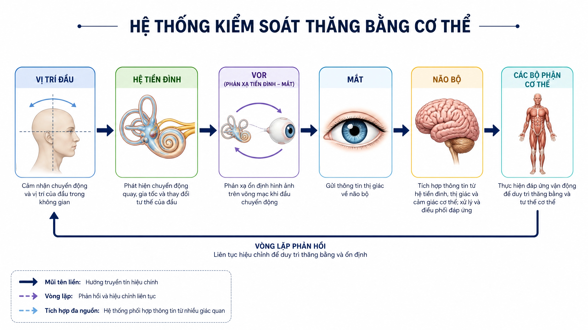
EN: defensive-jumping-spin-direction-change
Quality: 4/5 (vision-QA, June 2026) · Path: balance_loop.png
defensive-jumping-spin-direction-change
CUE (EN)
"1. Jump = desperation, not default 2. Lob recovery = run + jump 3. Split on the way back 4. Don't jump for slices 5. Jump when lobbed, not when driven 6. Lateral jump for wide balls 7. Forward jump for short balls 8. Land balanced, not sprawled 9. Use jumps sparingly 10. Hop is faster than stride"
CUE (VI)
"1. Nhảy = tuyệt vọng, không mặc định 2. Phục hồi lob = chạy + nhảy 3. Split trên đường về 4. Đừng nhảy cho slice 5. Nhảy khi bị lob, không khi bị drive 6. Nhảy ngang cho bóng rộng 7. Nhảy tới cho bóng ngắn 8. Tiếp đất cân bằng, không loạng choạng 9. Dùng nhảy tiết kiệm 10. Hop nhanh hơn bước dài"
What the diagram is saying
- Diagrammatic illustration: defensive-jumping-spin-direction-change
Practical Instructions (Hướng Dẫn Thực Hành)
1. Jump = desperation, not default — use jumps sparingly, only when off-balance.
1. Nhảy = tuyệt vọng, không phải mặc định — dùng nhảy tiết chế, chỉ khi mất thăng bằng.
2. Lob recovery: run + jump + spin — turn the body in the air to land facing the court.
2. Phục hồi lob: chạy + nhảy + xoay — xoay thân trên không để tiếp đất đối diện sân.
3. Tight core mid-air = control — land on the front of the feet, ready to move.
3. Core chặt giữa không trung = kiểm soát — tiếp đất trên mũi chân, sẵn sàng di chuyển.
4. Direction change: hit behind the opponent, then run forward, then change direction.
4. Đổi hướng: đánh sau lưng đối thủ, rồi chạy tới, rồi đổi hướng.
5. Defensive play is buying time — every defensive shot should set up the next offense.
5. Phòng thủ là mua thời gian — mỗi cú phòng thủ nên setup cú tấn công tiếp theo.
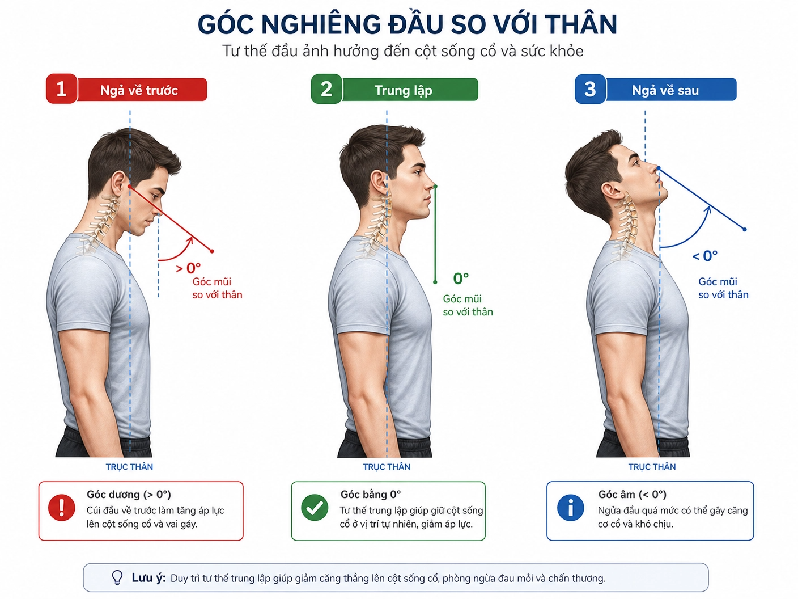
EN: Aerial body rotation
Quality: 4/5 (vision-QA, June 2026) · Path: head_positions.png
Aerial body rotation / direction-change footwork
CUE (EN)
"1. Aerial = body in air, balanced 2. Direction change mid-air is hard 3. Plan the landing before takeoff 4. Landing foot = brake foot 5. Use core to control rotation 6. Aerial only when necessary 7. Smash recovery = split-step on land 8. Tight core mid-air = control 9. Don't kick the legs 10. Land on the front of the feet"
CUE (VI)
"1. Aerial = cơ thể trên không, cân bằng 2. Đổi hướng giữa không trung là khó 3. Kế hoạch tiếp đất trước khi cất cánh 4. Chân tiếp đất = chân phanh 5. Dùng core kiểm soát xoay 6. Aerial chỉ khi cần 7. Phục hồi smash = split-step khi tiếp đất 8. Core chặt giữa không = kiểm soát 9. Đừng đá chân 10. Tiếp đất trên mũi chân"
What the diagram is saying
- Diagrammatic illustration: Aerial body rotation / direction-change footwork
Practical Instructions (Hướng Dẫn Thực Hành)
1. Plan the landing before takeoff — know where you will land before you jump.
1. Kế hoạch tiếp đất trước khi cất cánh — biết bạn sẽ tiếp đất ở đâu trước khi nhảy.
2. Tight core mid-air = control — the core is the center of rotation.
2. Core chặt giữa không = kiểm soát — core là tâm xoay.
3. Landing foot = brake foot — land on the front of the feet, knees bent, ready to push.
3. Chân tiếp đất = chân phanh — tiếp đất trên mũi chân, gối gập, sẵn sàng đẩy.
4. Aerial rotation is for emergencies: lobs, defensive gets, wide balls.
4. Xoay trên không cho tình huống khẩn cấp: lob, defensive get, bóng rộng.
5. Use aerial rotation sparingly — the energy cost is high, the recovery time is long.
5. Dùng xoay trên không tiết chế — chi phí năng lượng cao, thời gian hồi phục dài.
3 takeaway cuối
- (1) Anticipation = 4 hệ thống cùng làm việc. Tập hệ thống, không phải từng cú.
- (2) Big loop ≠ power. Đường thẳng + kiểm soát thần kinh-vận động = hiệu quả hơn.
- (3) Tennis là blitz-chess: plan, anticipate, disguise. Đừng chỉ phản ứng — hãy chuẩn bị trước.
Drills tham khảo (20-min practice)
- 5 phút Watch pro match + call shot: xem video 1 quả, dừng ngay trước contact, đoán hướng bóng. So với thực tế.
- 5 phút Plan 3 shots ahead: trước khi giao bóng, nói to 3 quả bạn sẽ đánh tiếp theo. Giao rồi thực hiện.
- 5 phút Disguise drill: shadow forehand nhưng tay chuẩn bị như backhand. Tập không để lộ ý đồ.
- 5 phút Mental replay: 5 phút ngồi yên, nhớ lại 3 cú tốt nhất hôm qua. Cụ thể hóa cảm giác cơ thể.
End of STRATEGY
Henry Pham · Visual Coaching Library · Pilot Series · June 2026
TOPIC 11 of 11
MULTI-TOPIC Cross-Stroke Principles — The Universal Patterns
— verso —
EN: The Mechanics of Modern Tennis (Master Overview)
VI: Cơ học Tennis Hiện đại (Tổng quan Toàn diện)
Quality: 4/5 (vision-QA, June 2026) · Path: The Mechanics of Modern Tennis.png
Comprehensive multi-panel reference: 4 grip types, kinetic chain, 4-stage serve, speed benchmarks. Single image spanning grip+forehand+serve+biomechanics.
CUE (EN)
"One image, four principles: grip + chain + serve + speed. Reference card for any stroke."
CUE (VI)
"Một ảnh, bốn nguyên tắc: grip + chuỗi + serve + tốc độ. Thẻ tham khảo cho mọi cú."
What the diagram is saying
- Section 1 — 4 Grip Types: Continental, Eastern, Semi-Western, Western with court impact zones.
- Section 2 — Kinetic Chain: 95% energy from ground reaction force flowing up.
- Section 3 — 4-Stage Serve Model: Trigger → Trophy → Acceleration → Contact.
- Section 4 — Speed Benchmarks: Zverev 136/132 MPH, Martinez 129 MPH.
- Section 5 — Stretch-Shortening Cycle.
Practical Instructions (Hướng Dẫn Thực Hành)
1. Compact stroke > big backswing — modern tennis rewards efficient motion over long swings.
1. Compact > big backswing — tennis hiện đại thưởng chuyển động hiệu quả hơn vung dài.
2. Brief loop + hip forward = modern winner — the loop is small but the hip commit is big.
2. Brief loop + hông tới = người thắng hiện đại — loop nhỏ nhưng hông commit lớn.
3. Hop counter-balances rotation — the hop is part of the kinetic chain, not decoration.
3. Hop đối-trọng-lực xoay — hop là một phần chuỗi động học, không phải trang trí.
4. Foundation → Application → Integration — three levels of skill, each depends on the prior.
4. Foundation → Application → Integration — ba cấp kỹ năng, mỗi cấp phụ thuộc cấp trước.
5. Champion blueprint: build the foundation, apply under pressure, integrate into match play.
5. Bản thiết kế nhà vô địch: xây nền, áp dụng dưới áp lực, tích hợp vào trận đấu.
EN: Future Champion: The Paradigm Shift
VI: Nhà vô địch tương lai: Sự chuyển đổi mô hình
Quality: 3/5 (vision-QA, June 2026) · Path: Future Champion Tennis Blueprint.png
Big loop vs direct path. 4-pillar champion framework: Bio-Slingshot, Blitz-Chess, Situational Awareness, Mental Speed.
CUE (EN)
"The future champion trains brain + body together. Big loop is the past. Direct path + intelligence wins."
CUE (VI)
"Nhà vô địch tương lai tập não + cơ thể cùng nhau. Vòng lớn là quá khứ. Đường thẳng + trí tuệ thắng."
What the diagram is saying
- Pillar 1 — Traditional Myth vs Modern Reality: muscle memory vs neuro-motor pathway.
- Pillar 2 — Bio-Slingshot: whip-like kinetic chain.
- Pillar 3 — Tennis Blitz-Chess: plan, anticipate, disguise.
- Pillar 4 — Situational Awareness & Mental Speed.
Practical Instructions (Hướng Dẫn Thực Hành)
1. Old model: muscle memory through repetition. New model: embodied chain through perception.
1. Mô hình cũ: trí nhớ cơ bắp qua lặp lại. Mô hình mới: chuỗi nhập thể qua nhận thức.
2. Old model: technique is the goal. New model: technique emerges from situation.
2. Mô hình cũ: kỹ thuật là mục tiêu. Mô hình mới: kỹ thuật xuất hiện từ tình huống.
3. Old model: train the stroke. New model: train the perception, the stroke follows.
3. Mô hình cũ: tập cú đánh. Mô hình mới: tập nhận thức, cú đánh sẽ theo.
4. Champion mindset: every ball is a new problem, not a new repetition of the same stroke.
4. Tư duy nhà vô địch: mỗi bóng là vấn đề mới, không phải lặp lại cùng cú.
5. The paradigm shift is from doing-the-stroke to reading-and-responding with the stroke.
5. Chuyển đổi mô hình: từ làm-cú-đánh sang đọc-và-đáp-bằng-cú-đánh.

EN: Foundations - BMR model & movement circles
Quality: 4/5 (vision-QA, June 2026) · Path: comparison-3.png
Foundations - BMR model & movement circles
CUE (EN)
"1. Big loop = draw back wide 2. Compact loop = draw back tight 3. Big loop for high balls 4. Compact loop for low balls 5. Loop size matches ball height 6. The loop is your rhythm 7. Don't loop in different shapes 8. One loop, one rhythm = consistency 9. Compact loop = hip-driven 10. Big loop = shoulder-driven"
CUE (VI)
"1. Vòng lớn = kéo vợt rộng ra sau 2. Vòng gọn = kéo vợt sát 3. Vòng lớn cho bóng cao 4. Vòng gọn cho bóng thấp 5. Kích thước vòng khớp chiều cao bóng 6. Vòng là nhịp của bạn 7. Đừng loop với hình dạng khác nhau 8. Một vòng, một nhịp = nhất quán 9. Vòng gọn = do hông điều khiển 10. Vòng lớn = do vai điều khiển"
What the diagram is saying
- Diagrammatic illustration: Foundations - BMR model & movement circles
Practical Instructions (Hướng Dẫn Thực Hành)
1. BMR (Basic Motor Reflex): the foundational movement patterns that all strokes share.
1. BMR (Phản Xạ Vận Động Cơ Bản): mẫu chuyển động nền mà mọi cú đánh cùng chia sẻ.
2. Movement circles: every shot is a circle (load, launch, contact, recover) — see the pattern.
2. Vòng chuyển động: mỗi cú là một vòng (nạp, phóng, tiếp xúc, hồi phục) — thấy mẫu.
3. Foundation drills: shadow swings, no-balls, focus on BMR patterns without ball pressure.
3. Bài tập nền: shadow swing, không bóng, tập trung vào mẫu BMR không áp lực bóng.
4. Application: add the ball, see if the BMR pattern holds under contact conditions.
4. Áp dụng: thêm bóng, xem mẫu BMR giữ vững trong điều kiện tiếp xúc.
5. Integration: use the same BMR pattern in match play, do not switch to a different stroke.
5. Tích hợp: dùng cùng mẫu BMR trong trận đấu, không chuyển sang cú khác.

EN: Posture & body mechanics (Trầm Kiển
Quality: 4/5 (vision-QA, June 2026) · Path: knee_flexion_comparison.png
Posture & body mechanics (Trầm Kiển / Truy Khuyu)
CUE (EN)
"1. Head still = balance anchor 2. Eyes on contact zone 3. Spine neutral, not arched 4. Shoulders down, not up 5. Core engaged, not braced 6. Knees soft, not locked 7. Weight on balls of feet 8. Posture = the chassis 9. Bad posture = bad everything 10. Posture is the first thing to fix"
CUE (VI)
"1. Đầu yên = mỏ neo cân bằng 2. Mắt nhìn vùng tiếp xúc 3. Cột sống trung tính, không cong 4. Vai xuống, không lên 5. Core chủ động, không gồng 6. Gối mềm, không khóa 7. Trọng lượng trên mũi chân 8. Tư thế = khung gầm 9. Tư thế xấu = mọi thứ xấu 10. Tư thế là thứ đầu tiên cần sửa"
What the diagram is saying
- Diagrammatic illustration: Posture & body mechanics (Trầm Kiển / Truy Khuyu)
Practical Instructions (Hướng Dẫn Thực Hành)
1. Head still = balance anchor — the head is the reference point for every other segment.
1. Đầu yên = neo cân bằng — đầu là điểm tham chiếu cho mọi phân đoạn khác.
2. Spine neutral — neither too straight (rigid) nor too curved (collapsed), find the middle.
2. Cột sống trung tính — không quá thẳng (cứng) cũng không quá cong (sụp), tìm giữa.
3. Knees soft — locked knees kill rotation, soft knees allow the kinetic chain to flow.
3. Gối mềm — gối khóa giết xoay, gối mềm cho phép chuỗi động học chảy.
4. Weight on balls of feet — flat feet = slow, balls of feet = ready to move.
4. Trọng lượng trên mũi chân — chân phẳng = chậm, mũi chân = sẵn sàng.
5. Posture is the chassis: bad posture = bad everything, fix the posture first.
5. Tư thế là khung: tư thế xấu = mọi thứ xấu, sửa tư thế trước.
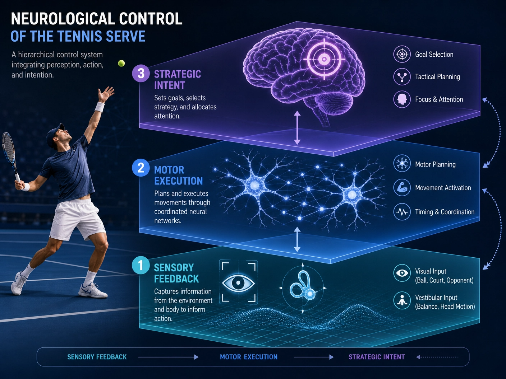
EN: Feed-forward vs feedback control methodology
Quality: 4/5 (vision-QA, June 2026) · Path: control-layers-3.png
Feed-forward vs feedback control methodology
CUE (EN)
"1. Feed-forward = predict and prepare 2. Feedback = react to outcome 3. Use feed-forward for the first move 4. Use feedback for adjustment 5. Predict the ball before it arrives 6. Read shoulder rotation early 7. Anticipation > reaction 8. Feed-forward is faster than feedback 9. Both systems work together 10. Tennis is 80% feed-forward"
CUE (VI)
"1. Feed-forward = dự đoán và chuẩn bị 2. Feedback = phản ứng với kết quả 3. Dùng feed-forward cho bước đầu tiên 4. Dùng feedback cho điều chỉnh 5. Dự đoán bóng trước khi đến 6. Đọc xoay vai sớm 7. Dự đoán > phản ứng 8. Feed-forward nhanh hơn feedback 9. Cả hai hệ thống làm việc cùng nhau 10. Tennis là 80% feed-forward"
What the diagram is saying
- Diagrammatic illustration: Feed-forward vs feedback control methodology
Practical Instructions (Hướng Dẫn Thực Hành)
1. Feed-forward: predict the ball, prepare the body, before the ball arrives.
1. Feed-forward: dự đoán bóng, chuẩn bị cơ thể, trước khi bóng tới.
2. Feedback: react to the ball, adjust the body, after the ball is in flight.
2. Feedback: phản ứng với bóng, điều chỉnh cơ thể, sau khi bóng đang bay.
3. Tennis is 80% feed-forward, 20% feedback — anticipation beats reaction.
3. Tennis là 80% feed-forward, 20% feedback — dự đoán thắng phản ứng.
4. Read shoulder rotation early: shoulder turn predicts direction before the ball is hit.
4. Đọc xoay vai sớm: vai quay dự đoán hướng trước khi bóng được đánh.
5. Tennis is 80% anticipation, 20% execution — train the eye, not just the body.
5. Tennis là 80% dự đoán, 20% thực thi — tập mắt, không chỉ thân.
3 takeaway cuối
- (1) Một ảnh overview, nhiều nguyên tắc áp dụng. Dùng làm reference nhanh khi học sinh mới.
- (2) Future champion = direct path + neuro-motor control. Big loop là quá khứ.
- (3) Tennis là hệ thống đa lớp: grip, chuỗi, serve, speed, chiến thuật, tâm lý — tất cả liên kết.
Drills tham khảo (20-min practice)
- 5 phút Reference card walk-through: in 1 ảnh overview, chỉ ra 4 stroke có ảnh hưởng bởi cùng nguyên tắc (grip, kinetic chain, etc.).
- 5 phút Cross-stroke shadow: forehand → volley → overhead — cùng grip, cùng chain, khác contact point.
- 5 phút Compare-and-contrast: forehand cũ của bạn vs forehand mới (sau khi đọc nguyên tắc). Ghi 3 thay đổi cụ thể.
- 5 phút Build a personal cheat-sheet: 1 trang A4 với 4 nguyên tắc + 4 cue của riêng bạn. Dán lên tường.
End of MULTI-TOPIC
Henry Pham · Visual Coaching Library · Pilot Series · June 2026